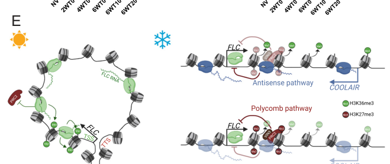

FLC is an Arabidopsis MADS-box DNA-binding transcription factor that delays flowering by regulating genes in leaves and the shoot meristem. It binds regulatory DNA at floral integrators, including a CArG-containing region in the first intron of FT and the SOC1 promoter, and represses their expression. FLC acts in multimeric protein complexes, including complexes with other MADS proteins such as SVP. Although best characterized as a floral repressor, FLC also promotes expression of a subset of bound target genes; its transcriptional effect depends on the target and context. Prolonged cold and autonomous-pathway regulators reduce FLC expression, relieving its inhibition of floral transition. The chromatin silencing of the FLC locus is regulation of FLC expression, distinct from the DNA-binding activity of the FLC protein. Additional documented roles include juvenile-to-adult phase progression and temperature-dependent modulation of circadian period.
| GO Term | Evidence | Action | Reason |
|---|---|---|---|
|
GO:0006357
regulation of transcription by RNA polymerase II
|
IBA
GO_REF:0000033 |
ACCEPT |
Summary: FLC directly regulates RNA polymerase II target genes through sequence-specific chromatin binding.
Reason: Native-target ChIP and expression experiments establish FLC occupancy at SOC1 promoter and FT intron regulatory DNA and regulation of their transcription (PMID:16623882; PMID:16600915). This supports the inherited or domain-based activity without assigning every MADS-family member the same targets or regulatory sign.
Supporting Evidence:
PMID:16623882
Using chromatin immunoprecipitation, we have shown that FLC binds to a region of the first intron of FT that contains a putative CArG box, and have confirmed that FLC binds to a CArG box in the promoter of the SOC1 gene.
PMID:16600915
FLC expression in the meristem impairs response to the FT signal by directly repressing expression of the SOC1 MADS-box transcription factor and preventing up-regulation of the bZIP transcription factor FD.
|
|
GO:0009910
negative regulation of flower development
|
IBA
GO_REF:0000033 |
ACCEPT |
Summary: FLC represses the floral transition.
Reason: Leaf and meristem expression experiments show that FLC suppresses systemic floral signaling and meristem competence. The PAINT assertion agrees with target-specific flowering repression, not merely with broad MADS-box family membership.
Supporting Evidence:
PMID:16600915
FLC expression in the meristem impairs response to the FT signal by directly repressing expression of the SOC1 MADS-box transcription factor and preventing up-regulation of the bZIP transcription factor FD.
|
|
GO:0000978
RNA polymerase II cis-regulatory region sequence-specific DNA binding
|
IBA
GO_REF:0000033 |
ACCEPT |
Summary: FLC directly regulates RNA polymerase II target genes through sequence-specific chromatin binding.
Reason: Native-target ChIP and expression experiments establish FLC occupancy at SOC1 promoter and FT intron regulatory DNA and regulation of their transcription (PMID:16623882; PMID:16600915). This supports the inherited or domain-based activity without assigning every MADS-family member the same targets or regulatory sign.
Supporting Evidence:
PMID:16623882
Using chromatin immunoprecipitation, we have shown that FLC binds to a region of the first intron of FT that contains a putative CArG box, and have confirmed that FLC binds to a CArG box in the promoter of the SOC1 gene.
PMID:16600915
FLC expression in the meristem impairs response to the FT signal by directly repressing expression of the SOC1 MADS-box transcription factor and preventing up-regulation of the bZIP transcription factor FD.
|
|
GO:0000981
DNA-binding transcription factor activity, RNA polymerase II-specific
|
IBA
GO_REF:0000033 |
ACCEPT |
Summary: FLC directly regulates RNA polymerase II target genes through sequence-specific chromatin binding.
Reason: Native-target ChIP and expression experiments establish FLC occupancy at SOC1 promoter and FT intron regulatory DNA and regulation of their transcription (PMID:16623882; PMID:16600915). This supports the inherited or domain-based activity without assigning every MADS-family member the same targets or regulatory sign.
Supporting Evidence:
PMID:16623882
Using chromatin immunoprecipitation, we have shown that FLC binds to a region of the first intron of FT that contains a putative CArG box, and have confirmed that FLC binds to a CArG box in the promoter of the SOC1 gene.
PMID:16600915
FLC expression in the meristem impairs response to the FT signal by directly repressing expression of the SOC1 MADS-box transcription factor and preventing up-regulation of the bZIP transcription factor FD.
|
|
GO:0000977
RNA polymerase II transcription regulatory region sequence-specific DNA binding
|
IEA
GO_REF:0000002 |
ACCEPT |
Summary: FLC directly regulates RNA polymerase II target genes through sequence-specific chromatin binding.
Reason: Native-target ChIP and expression experiments establish FLC occupancy at SOC1 promoter and FT intron regulatory DNA and regulation of their transcription (PMID:16623882; PMID:16600915). This supports the inherited or domain-based activity without assigning every MADS-family member the same targets or regulatory sign.
Supporting Evidence:
PMID:16623882
Using chromatin immunoprecipitation, we have shown that FLC binds to a region of the first intron of FT that contains a putative CArG box, and have confirmed that FLC binds to a CArG box in the promoter of the SOC1 gene.
PMID:16600915
FLC expression in the meristem impairs response to the FT signal by directly repressing expression of the SOC1 MADS-box transcription factor and preventing up-regulation of the bZIP transcription factor FD.
|
|
GO:0003677
DNA binding
|
IEA
GO_REF:0000120 |
MODIFY |
Summary: Refine general DNA binding to the established cis-regulatory sequence-specific activity.
Reason: FLC occupies CArG-containing cis-regulatory DNA at the FT first intron and SOC1 promoter in target-specific ChIP experiments (PMID:16623882). This localizes the otherwise general DNA-binding claim to sequence-specific regulatory-region binding at RNA polymerase II-transcribed genes, already represented by GO:0000978. The evidence identifies a transcriptional DNA-recognition role rather than nonspecific DNA association.
Proposed replacements:
RNA polymerase II cis-regulatory region sequence-specific DNA binding
Supporting Evidence:
PMID:16623882
Using chromatin immunoprecipitation, we have shown that FLC binds to a region of the first intron of FT that contains a putative CArG box, and have confirmed that FLC binds to a CArG box in the promoter of the SOC1 gene.
PMID:16600915
FLC expression in the meristem impairs response to the FT signal by directly repressing expression of the SOC1 MADS-box transcription factor and preventing up-regulation of the bZIP transcription factor FD.
|
|
GO:0003700
DNA-binding transcription factor activity
|
IEA
GO_REF:0000002 |
MODIFY |
Summary: Refine transcription factor activity to regulation of RNA polymerase II targets.
Reason: The InterPro-derived DNA-binding transcription-factor claim agrees with FLC occupancy of FT/SOC1 regulatory regions and altered expression of these protein-coding targets (PMID:16623882; PMID:16600915). Specifying RNA polymerase II in GO:0000981 captures the demonstrated transcription system. This activity term does not require an exclusively repressive sign at every FLC target.
Proposed replacements:
DNA-binding transcription factor activity, RNA polymerase II-specific
Supporting Evidence:
PMID:16623882
Using chromatin immunoprecipitation, we have shown that FLC binds to a region of the first intron of FT that contains a putative CArG box, and have confirmed that FLC binds to a CArG box in the promoter of the SOC1 gene.
PMID:16600915
FLC expression in the meristem impairs response to the FT signal by directly repressing expression of the SOC1 MADS-box transcription factor and preventing up-regulation of the bZIP transcription factor FD.
|
|
GO:0005634
nucleus
|
IEA
GO_REF:0000120 |
ACCEPT |
Summary: FLC acts on nuclear chromatin.
Reason: In vivo chromatin occupancy at FT and SOC1 and the curated nuclear localization support the nuclear site of FLC transcription factor activity.
Supporting Evidence:
PMID:16623882
Using chromatin immunoprecipitation, we have shown that FLC binds to a region of the first intron of FT that contains a putative CArG box, and have confirmed that FLC binds to a CArG box in the promoter of the SOC1 gene.
file:ARATH/FLC/FLC-uniprot.txt
SUBCELLULAR LOCATION: Nucleus
|
|
GO:0006355
regulation of DNA-templated transcription
|
IEA
GO_REF:0000002 |
MODIFY |
Summary: Refine transcription regulation to RNA polymerase II transcription.
Reason: FLC regulates transcription of the RNA polymerase II targets FT and SOC1 through their regulatory chromatin, supported by target occupancy and expression experiments (PMID:16623882; PMID:16600915). GO:0006357 adds the warranted polymerase specificity to the broad transcription-regulation process. Keeping the replacement unsigned preserves the separately supported target-dependent positive as well as negative effects.
Proposed replacements:
regulation of transcription by RNA polymerase II
Supporting Evidence:
PMID:16623882
Using chromatin immunoprecipitation, we have shown that FLC binds to a region of the first intron of FT that contains a putative CArG box, and have confirmed that FLC binds to a CArG box in the promoter of the SOC1 gene.
PMID:16600915
FLC expression in the meristem impairs response to the FT signal by directly repressing expression of the SOC1 MADS-box transcription factor and preventing up-regulation of the bZIP transcription factor FD.
|
|
GO:0009908
flower development
|
IEA
GO_REF:0000043 |
MODIFY |
Summary: FLC negatively regulates floral development.
Reason: FLC represses floral integrator expression and limits the meristem response to the FT signal (PMID:16600915), establishing a negative regulatory role in floral development. Replace the keyword-derived process membership with the already-supported GO:0009910 regulatory role. This is a lateral process-to-regulation correction, not an is_a/part_of descendant refinement of flower development; it does not imply that FLC itself constructs floral tissues.
Proposed replacements:
negative regulation of flower development
Supporting Evidence:
PMID:16623882
Using chromatin immunoprecipitation, we have shown that FLC binds to a region of the first intron of FT that contains a putative CArG box, and have confirmed that FLC binds to a CArG box in the promoter of the SOC1 gene.
PMID:16600915
FLC expression in the meristem impairs response to the FT signal by directly repressing expression of the SOC1 MADS-box transcription factor and preventing up-regulation of the bZIP transcription factor FD.
|
|
GO:0009909
regulation of flower development
|
IEA
GO_REF:0000117 |
MODIFY |
Summary: Refine unsigned flower regulation to the supported negative effect.
Reason: The original assertion already places FLC in regulation of flower development but leaves the direction unspecified. Repression of SOC1 and impairment of the meristem response to FT (PMID:16600915) support the negative sign represented by GO:0009910, also present in an experimental row. This specifies the direction of floral regulation, without claiming that every transcriptional target of FLC is repressed.
Proposed replacements:
negative regulation of flower development
Supporting Evidence:
PMID:16623882
Using chromatin immunoprecipitation, we have shown that FLC binds to a region of the first intron of FT that contains a putative CArG box, and have confirmed that FLC binds to a CArG box in the promoter of the SOC1 gene.
PMID:16600915
FLC expression in the meristem impairs response to the FT signal by directly repressing expression of the SOC1 MADS-box transcription factor and preventing up-regulation of the bZIP transcription factor FD.
|
|
GO:0030154
cell differentiation
|
IEA
GO_REF:0000043 |
MODIFY |
Summary: Replace the generic differentiation mapping with FLC's demonstrated inhibition of floral development.
Reason: The keyword-derived developmental claim should be expressed as negative regulation of flower development, already present experimentally, rather than as an unspecified cell-differentiation program. FLC controls floral integrator transcription and meristem competence. This is a correction of developmental role/scope, not a claim that developmental regulation is false merely because it is broad.
Proposed replacements:
negative regulation of flower development
Supporting Evidence:
PMID:16600915
FLC expression in the meristem impairs response to the FT signal by directly repressing expression of the SOC1 MADS-box transcription factor and preventing up-regulation of the bZIP transcription factor FD.
|
|
GO:0045944
positive regulation of transcription by RNA polymerase II
|
IEA
GO_REF:0000002 |
ACCEPT |
Summary: FLC can positively regulate a subset of its direct transcriptional targets.
Reason: The prior sign reversal wrongly treated a flowering repressor as an obligate transcriptional repressor. PMID:21464308 combines FLC chromatin binding with target expression in flc mutants: five tested bound genes decreased in the mutant, supporting positive as well as negative transcriptional regulation. The full primary study identifies SMZ and TOE3 among positively regulated targets. This does not reverse FLC repression of FT/SOC1 or make FLC a universal activator.
Supporting Evidence:
PMID:21464308
Five genes showed decreased expression in the mutant, indicating that FLC binding can result in either transcriptional repression or activation.
|
|
GO:0046983
protein dimerization activity
|
IEA
GO_REF:0000002 |
ACCEPT |
Summary: FLC forms multimeric MADS-protein assemblies.
Reason: The in vivo complex can contain multiple FLC polypeptides, and a specific FLC-SVP interaction is independently supported. The general dimerization activity accommodates these self/partner assembly modes without claiming a single obligatory stoichiometry.
Supporting Evidence:
PMID:16623882
We have shown that FLC is a component of a multimeric protein complex in vivo and that more than one FLC polypeptides can be present in the complex.
PMID:19011118
Yeast two-hybrid analysis demonstrated an interaction between SVP and FLOWERING LOCUS C
|
|
GO:0005515
protein binding
|
IPI
PMID:19011118 Circadian clock proteins LHY and CCA1 regulate SVP protein a... |
MODIFY |
Summary: FLC forms a functional MADS-protein association with SVP.
Reason: The primary study directly assays the FLC-SVP pair by yeast two-hybrid and places both proteins in flowering repression. Refine uninformative protein binding to heterodimerization in this MADS-partner context; this does not assert an isolated native two-subunit stoichiometry for every FLC complex.
Proposed replacements:
protein heterodimerization activity
Supporting Evidence:
PMID:19011118
Yeast two-hybrid analysis demonstrated an interaction between SVP and FLOWERING LOCUS C
|
|
GO:0005515
protein binding
|
IPI
PMID:28650476 CrY2H-seq: a massively multiplexed assay for deep-coverage i... |
REMOVE |
Summary: Remove uninformative bare binding while preserving the interaction-screen evidence.
Reason: PMID:28650476 is a multiplexed binary-interaction screen of Arabidopsis transcription factors. The measured association is not denied, but a generic binding row does not identify a distinct FLC-enabled activity. The screen alone does not make every detected partner a native obligate heterodimer; characterized FLC MADS assembly is represented separately.
Supporting Evidence:
PMID:28650476
uncovering a network of 8,577 interactions among 1,453 transcription factors
|
|
GO:0005515
protein binding
|
IPI
PMID:38053494 FLZ13 interacts with FLC and ABI5 to negatively regulate flo... |
REMOVE |
Summary: FLZ13 association is real but bare protein binding is uninformative.
Reason: The primary study identifies direct FLZ13-FLC association and FLC-dependent repression of FT/SOC1. Preserve that regulatory interaction in the biological account; remove only the uninformative binding claim under policy, without assigning the regulator's activity to FLC.
Supporting Evidence:
PMID:38053494
Biochemical analysis showed that FLZ13 directly interacts with FLOWERING LOCUS C (FLC)
|
|
GO:0009266
response to temperature stimulus
|
IDA
PMID:25267112 Jumonji demethylases moderate precocious flowering at elevat... |
KEEP AS NON CORE |
Summary: FLC participates in the flowering response to elevated temperature.
Reason: PMID:25267112 shows that JMJ30/JMJ32 maintain FLC expression at warm temperatures and that the flc mutant has precocious flowering. FLC is a regulated output of this response, not itself a demonstrated temperature sensor or histone demethylase. Retain this precise environmental context outside the central DNA-binding activity.
Supporting Evidence:
PMID:25267112
At elevated temperatures, the JMJ30 RNA and protein are stabilized, and FLC expression is maintained at high levels to prevent extreme precocious flowering.
|
|
GO:2000028
regulation of photoperiodism, flowering
|
IMP
PMID:25267112 Jumonji demethylases moderate precocious flowering at elevat... |
ACCEPT |
Summary: FLC controls competence for photoperiodic floral induction.
Reason: The warm-temperature genetics of PMID:25267112 concern FLC-mediated flowering repression. Independent leaf/meristem experiments in PMID:16600915 establish that FLC blocks the response to photoperiodic FT signaling. Retain regulation of photoperiodic flowering without claiming FLC perceives day length.
Supporting Evidence:
PMID:16600915
Vernalization, the response to winter temperatures, overcomes a block on photoperiodic floral induction.
PMID:16600915
FLC expression in the meristem impairs response to the FT signal by directly repressing expression of the SOC1 MADS-box transcription factor and preventing up-regulation of the bZIP transcription factor FD.
|
|
GO:0000976
transcription cis-regulatory region binding
|
IPI
PMID:30356219 Transcriptional regulation of nitrogen-associated metabolism... |
MODIFY |
Summary: Refine regulatory-region binding to the established sequence-specific cis-regulatory DNA-binding activity.
Reason: The nitrogen-network paper is cached as an abstract that does not resolve the individual FLC target pair; it is not rejected for failing to name FLC there. Independent target-specific ChIP establishes the same general molecular claim with greater specificity at FT/SOC1 CArG-containing regions. No uninspected nitrogen-metabolism target is asserted.
Proposed replacements:
RNA polymerase II cis-regulatory region sequence-specific DNA binding
Supporting Evidence:
PMID:16623882
Using chromatin immunoprecipitation, we have shown that FLC binds to a region of the first intron of FT that contains a putative CArG box, and have confirmed that FLC binds to a CArG box in the promoter of the SOC1 gene.
|
|
GO:0032991
protein-containing complex
|
IDA
PMID:16623882 The Arabidopsis FLC protein interacts directly in vivo with ... |
ACCEPT |
Summary: FLC is a component of an experimentally detected protein complex.
Reason: PMID:16623882 reports an in vivo multimeric FLC-containing complex, including more than one FLC polypeptide. Retain the experimentally warranted complex membership without inventing its complete composition or asserting that all complexes are chromatin-silencing machinery.
Supporting Evidence:
PMID:16623882
We have shown that FLC is a component of a multimeric protein complex in vivo and that more than one FLC polypeptides can be present in the complex.
|
|
GO:0005515
protein binding
|
IPI
PMID:30946745 Floral regulators FLC and SOC1 directly regulate expression ... |
REMOVE |
Summary: Retain the FLC/SVP chromatin-regulatory mechanism, but remove bare protein binding.
Reason: PMID:30946745 establishes FLC/SVP-dependent repression and chromatin changes at TFS1. Generic protein binding adds no defined FLC-enabled molecular activity beyond its separately supported transcription-factor and MADS-association functions. Removal is the bare-binding policy exception, not a rejection of the reported interactions.
Supporting Evidence:
PMID:30946745
FLC and SVP repress TFS1 transcription leading to deposition of trimethylation of Iysine 27 of histone 3 (H3K27me3) by the Polycomb Repressive Complex 2 at the TFS1 locus.
|
|
GO:0003700
DNA-binding transcription factor activity
|
IDA
PMID:16600915 The transcription factor FLC confers a flowering response to... |
MODIFY |
Summary: Specify FLC's RNA polymerase II DNA-binding transcription factor activity.
Reason: The original experimental, comparative or literature assertion agrees with direct FLC target occupancy and transcriptional effects. Refine to the RNA polymerase II-specific activity already present; no inference that an abstract-only family paper omitted or misidentified FLC is made.
Proposed replacements:
DNA-binding transcription factor activity, RNA polymerase II-specific
Supporting Evidence:
PMID:16623882
Using chromatin immunoprecipitation, we have shown that FLC binds to a region of the first intron of FT that contains a putative CArG box, and have confirmed that FLC binds to a CArG box in the promoter of the SOC1 gene.
PMID:16600915
FLC expression in the meristem impairs response to the FT signal by directly repressing expression of the SOC1 MADS-box transcription factor and preventing up-regulation of the bZIP transcription factor FD.
|
|
GO:0003700
DNA-binding transcription factor activity
|
ISS
PMID:12837945 Molecular and phylogenetic analyses of the complete MADS-box... |
MODIFY |
Summary: Specify FLC's RNA polymerase II DNA-binding transcription factor activity.
Reason: The original experimental, comparative or literature assertion agrees with direct FLC target occupancy and transcriptional effects. Refine to the RNA polymerase II-specific activity already present; no inference that an abstract-only family paper omitted or misidentified FLC is made.
Proposed replacements:
DNA-binding transcription factor activity, RNA polymerase II-specific
Supporting Evidence:
PMID:16623882
Using chromatin immunoprecipitation, we have shown that FLC binds to a region of the first intron of FT that contains a putative CArG box, and have confirmed that FLC binds to a CArG box in the promoter of the SOC1 gene.
PMID:16600915
FLC expression in the meristem impairs response to the FT signal by directly repressing expression of the SOC1 MADS-box transcription factor and preventing up-regulation of the bZIP transcription factor FD.
|
|
GO:0009266
response to temperature stimulus
|
IMP
PMID:16473970 FLOWERING LOCUS C mediates natural variation in the high-tem... |
KEEP AS NON CORE |
Summary: FLC contributes to temperature-dependent clock behavior.
Reason: Near-isogenic lines and induced alleles establish an FLC-dependent increase in circadian period at 27 degrees C. This is a supported temperature-response role distinct from claiming direct temperature sensing or making circadian control its principal function.
Supporting Evidence:
PMID:16473970
FLC lengthened the circadian period specifically at 27 degrees C, contributing to temperature compensation of the circadian clock.
|
|
GO:0009910
negative regulation of flower development
|
IMP
PMID:12114624 Multiple roles of Arabidopsis VRN1 in vernalization and flow... |
ACCEPT |
Summary: FLC is a genetically established floral repressor.
Reason: The VRN1 study places FLC as the major repressed floral inhibitor; independent FLC tissue-expression and target-binding studies directly establish the inhibitory function. Its experimental assertion is not rejected because the original abstract emphasizes the upstream regulator.
Supporting Evidence:
PMID:12114624
the major target of the vernalization pathway, the floral repressor FLC.
PMID:16600915
FLC expression in the meristem impairs response to the FT signal by directly repressing expression of the SOC1 MADS-box transcription factor and preventing up-regulation of the bZIP transcription factor FD.
|
|
GO:0010048
vernalization response
|
IEP
PMID:15734903 Differential regulation of FLOWERING LOCUS C expression by v... |
ACCEPT |
Summary: Downregulation of FLC links prolonged cold to competence to flower.
Reason: The comparative study distinguishes cabbage and Arabidopsis vernalization responses rather than implying identical timing across species. Native Arabidopsis FLC transcript and protein decline with cold, quantitatively relating FLC levels to flowering response (PMID:10716723). Retain the response claim without assigning FLC the catalytic machinery that silences its own locus.
Supporting Evidence:
PMID:10716723
The level of FLC determines the extent of the vernalization response in the promotion of flowering
|
|
GO:0042752
regulation of circadian rhythm
|
IMP
PMID:16473970 FLOWERING LOCUS C mediates natural variation in the high-tem... |
KEEP AS NON CORE |
Summary: FLC modulates circadian period in a temperature-dependent context.
Reason: The primary allele and mutant experiments support a genuine clock phenotype. This is a secondary regulatory role, not evidence that FLC is an obligatory central oscillator component or directly modifies clock proteins.
Supporting Evidence:
PMID:16473970
FLC lengthened the circadian period specifically at 27 degrees C, contributing to temperature compensation of the circadian clock.
|
|
GO:0003700
DNA-binding transcription factor activity
|
TAS
PMID:10716723 The molecular basis of vernalization: the central role of FL... |
MODIFY |
Summary: Specify FLC's RNA polymerase II DNA-binding transcription factor activity.
Reason: The original experimental, comparative or literature assertion agrees with direct FLC target occupancy and transcriptional effects. Refine to the RNA polymerase II-specific activity already present; no inference that an abstract-only family paper omitted or misidentified FLC is made.
Proposed replacements:
DNA-binding transcription factor activity, RNA polymerase II-specific
Supporting Evidence:
PMID:16623882
Using chromatin immunoprecipitation, we have shown that FLC binds to a region of the first intron of FT that contains a putative CArG box, and have confirmed that FLC binds to a CArG box in the promoter of the SOC1 gene.
PMID:16600915
FLC expression in the meristem impairs response to the FT signal by directly repressing expression of the SOC1 MADS-box transcription factor and preventing up-regulation of the bZIP transcription factor FD.
|
|
GO:0003700
DNA-binding transcription factor activity
|
ISS
PMID:11118137 Arabidopsis transcription factors: genome-wide comparative a... |
MODIFY |
Summary: Specify FLC's RNA polymerase II DNA-binding transcription factor activity.
Reason: The original experimental, comparative or literature assertion agrees with direct FLC target occupancy and transcriptional effects. Refine to the RNA polymerase II-specific activity already present; no inference that an abstract-only family paper omitted or misidentified FLC is made.
Proposed replacements:
DNA-binding transcription factor activity, RNA polymerase II-specific
Supporting Evidence:
PMID:16623882
Using chromatin immunoprecipitation, we have shown that FLC binds to a region of the first intron of FT that contains a putative CArG box, and have confirmed that FLC binds to a CArG box in the promoter of the SOC1 gene.
PMID:16600915
FLC expression in the meristem impairs response to the FT signal by directly repressing expression of the SOC1 MADS-box transcription factor and preventing up-regulation of the bZIP transcription factor FD.
|
Q: Which native FLC partner combinations determine whether a bound target is activated or repressed in each tissue?
Q: How do the composition and stoichiometry of native FLC complexes change during floral transition and temperature responses?
Experiment: Combine native-tag FLC complex purification, partner perturbation, chromatin occupancy and nascent transcription in matched leaf and meristem samples before and after floral induction.
Hypothesis: FLC partner composition determines target-specific transcriptional sign.
The research report should be a detailed narrative explaining the function, biological processes, and localization of the gene product. Citations should be given for all claims.
You should prioritize authoritative reviews and primary scientific literature when conducting research. You can supplement
this with annotations you find in gene/protein databases, but these can be outdated or inaccurate.
We are specifically interested in the primary function of the gene - for enzymes, what reaction is catalyzed, and what is the substrate specificity? For transporters, what is the substrate? For structural proteins or adapters, what is the broader structural role? For signaling molecules, what is the role in the pathway.
We are interested in where in or outside the cell the gene product carries out its function.
We are also interested in the signaling or biochemical pathways in which the gene functions. We are less interested in broad pleiotropic effects, except where these elucidate the precise role.
Include evidence where possible. We are interested in both experimental evidence as well as inference from structure, evolution, or bioinformatic analysis. Precise studies should be prioritized over high-throughput, where available.
FLOWERING LOCUS C (FLC) in Arabidopsis thaliana encodes a MADS-box transcription factor that acts as a master repressor of flowering by directly suppressing expression of floral integrator genes such as FT and SOC1 (and also repressing FD) (li2025epigeneticregulationof pages 2-4, zhou2026beyondfloweringthe pages 2-3). The core vernalization response in Arabidopsis is mediated by cold-induced epigenetic silencing of the FLC locus, involving Polycomb (PRC2) H3K27me3 deposition and long noncoding RNA (lncRNA) pathways; recent work supports a model in which COOLAIR antisense transcription and PRC2 act in parallel to silence FLC (nielsen2024coolairandprc2 pages 1-2, nielsen2024coolairandprc2 pages 5-6). Newer studies also implicate nuclear architecture (nuclear pore Y-complex/periphery tethering) as a mechanistic layer influencing FLC transcriptional state (huang2024thenuclearpore pages 4-6, huang2024thenuclearpore pages 37-38). Translationally, the FLC-centered vernalization module is widely leveraged as a conceptual and practical framework for flowering-time manipulation in Brassicaceae crops, and can be perturbed by chemical devernalizers in Arabidopsis or through engineering of FLC ortholog regulation (otsuka2025smallmoleculesand pages 4-5, kim2026currentunderstandingof pages 7-8).
The target is Arabidopsis thaliana FLOWERING LOCUS C (FLC)—a MADS-box transcription factor central to vernalization-regulated flowering time (zhou2026beyondfloweringthe pages 1-2, li2025epigeneticregulationof pages 2-4). This matches the UniProt-provided identity (Q9S7Q7; At5g10140), and the literature used here explicitly concerns Arabidopsis FLC rather than unrelated “FLC” symbols in other organisms (nielsen2024coolairandprc2 pages 1-2, li2025epigeneticregulationof pages 2-4).
FLC is a MADS-box transcription factor that directly represses transcription of core floral activators/integrators:
- Direct repression of FT and SOC1 (zhou2026beyondfloweringthe pages 1-2, li2025epigeneticregulationof pages 2-4).
- Direct repression of FD by binding to the first intron of FD (li2025epigeneticregulationof pages 2-4).
A recent review specifies FLC binding to CArG-box [CC(A/T)6GG] motifs in promoters of FT and SOC1 as a mechanistic basis of repression (zhou2026beyondfloweringthe pages 2-3). This is consistent with genome-wide ChIP-seq that found 505 FLC binding sites and 786 putative target genes, with promoter enrichment and frequent CArG-like motifs (deng2011floweringlocusc pages 2-2).
FLC operates within MADS-domain repressor complexes and in coordination with other flowering repressors:
- A Nature Communications study reports FLC and other FLC-clade members can directly interact and form nuclear complexes, and that FLC-dependent floral repression requires other clade members (gu2013arabidopsisflcclade pages 1-2).
- Reviews also emphasize FLC’s functional association with other MADS proteins such as SVP (zhou2026beyondfloweringthe pages 2-3).
Direct subcellular localization of the FLC protein is not quantified in the excerpts here, but FLC’s role as a DNA-binding transcription factor and its operation in nuclear MADS-domain complexes implies a nuclear site of action (gu2013arabidopsisflcclade pages 1-2, deng2011floweringlocusc pages 2-2).
A major recent development is evidence that the FLC locus (chromatin) is regulated by nuclear architecture:
- The nuclear pore Y-complex (Nup107–160 complex) is reported to regulate FLC transcription by associating with FLC chromatin and interacting with histone H2A at the nuclear membrane; Nup96 enhances FLC positioning at the nuclear periphery, and disruption of this system reduces perinuclear positioning and represses FLC expression (huang2024thenuclearpore pages 4-6, huang2024thenuclearpore pages 37-38).
FLC acts as a central node in flowering-time control: when FLC is highly expressed it prevents flowering by repressing FT/SOC1; vernalization and other pathways reduce FLC to permit floral transition (li2025epigeneticregulationof pages 5-7, zhou2026beyondfloweringthe pages 1-2).
A 2024 PNAS study provides a mechanistic framework in which COOLAIR and PRC2 silence FLC in parallel:
- COOLAIR antisense transcription pathway: fast-responding; cold induces COOLAIR early, and COOLAIR transcription is mutually exclusive with FLC sense transcription at each allele; COOLAIR is associated with reduction of H3K36me3 and disruption of an FLC gene loop (nielsen2024coolairandprc2 pages 1-2, nielsen2024coolairandprc2 pages 3-5).
- PRC2 epigenetic pathway: slower; PRC2 nucleates H3K27me3 at an internal nucleation region and H3K27me3 then spreads across the locus for stable silencing; VIN3 is slowly induced by cold and supports the gradual allele-by-allele switch to stable OFF states (nielsen2024coolairandprc2 pages 1-2, nielsen2024coolairandprc2 pages 2-3).
- Temperature dynamics: COOLAIR repression is particularly sensitive to fluctuating freezing regimes; in fluctuating cold, COOLAIR drives stronger repression than PRC2 alone, while H3K27me3 accumulation shows less regime dependence (nielsen2024coolairandprc2 pages 5-6).
A cropped schematic from this work (Figure 4E) summarizes the two-pathway model and their chromatin features (nielsen2024coolairandprc2 media 4fe3dd57).
Reviews emphasize that vernalization-induced repression at FLC involves Polycomb-mediated H3K27me3 and coordinated chromatin changes that are mitotically maintained after return to warm conditions (shi2023roleofmethylation pages 1-2, kim2026currentunderstandingof pages 3-5). A broader epigenetic review compiles evidence that histone deacetylation and histone ubiquitination/deubiquitination systems modulate FLC expression and flowering time (li2025epigeneticregulationof pages 7-9, li2025epigeneticregulationof pages 5-7).
A key advance is the explicit demonstration/modeling that COOLAIR and PRC2 are parallel inputs rather than a single linear pathway, which helps reconcile prior discrepancies across experimental regimes (nielsen2024coolairandprc2 pages 1-2, nielsen2024coolairandprc2 pages 5-6).
Huang et al. (Oct 2024, The Plant Cell) report that nuclear pore Y-complex nucleoporins associate with FLC chromatin at the nuclear membrane, and that Nup96 promotes FLC locus positioning at the nuclear periphery, influencing RNA polymerase II occupancy and histone modification state at FLC (huang2024thenuclearpore pages 4-6, huang2024thenuclearpore pages 37-38). This expands “FLC regulation” beyond local chromatin modifiers to include subnuclear compartmentalization.
A 2023 review in Horticulture Research consolidates evidence that vernalization silences FLC through PRC2-mediated H3K27me3 and highlights broader methylation layers (histone/DNA/RNA methylation) that intersect with flowering networks (shi2023roleofmethylation pages 1-2).
Deng et al. (PNAS, Apr 2011) provide high-citation genome-scale evidence:
- 505 FLC binding sites and 786 putative FLC target genes (deng2011floweringlocusc pages 2-2).
- Peak distribution: 52.5% promoter regions; motif occurrence: 69% of sites contain a CArG-box motif (deng2011floweringlocusc pages 2-2).
Otsuka et al. (Communications Biology, Jan 2025) screened chemical libraries and identified devernalizer (DVR) compounds that reactivate FLC:
- Screening scale: 16,800 compounds plus an additional 13,790 in a blind screen; 5 compounds (DVR01–05) identified (otsuka2025smallmoleculesand pages 2-4).
- DVR02/03/05 induced approximately two-fold higher FLC expression compared with vernalized controls (p < 0.05) (otsuka2025smallmoleculesand pages 1-2).
- DVR06 delayed bolting from 40 to 45 days and increased leaf number by 4 in vernalized plants (p < 0.05) (otsuka2025smallmoleculesand pages 4-5).
- Chromatin: H3K27me3 peaks decreased from 3,281 (vernalized) to 2,812 (DVR06-treated vernalized), and RNA-seq identified 816 upregulated / 769 downregulated genes in DVR06-treated plants (otsuka2025smallmoleculesand pages 5-6).
The DVR chemical devernalizers demonstrate that small molecules can be used to reactivate FLC by reducing repressive chromatin marks (H3K27me3), thereby delaying flowering in vernalized plants (otsuka2025smallmoleculesand pages 4-5). While shown in Arabidopsis as a research and potential agronomic concept, this provides a tangible “implementation” route for modulating vernalization memory and flowering timing via exogenous treatments (otsuka2025smallmoleculesand pages 5-6).
Multiple reviews and crop-focused work emphasize that FLC orthologs in Brassica crops are breeding-relevant targets:
- Brassica species harbor multiple FLC homologs that map to flowering QTLs, and transgenic tests demonstrate functional conservation (e.g., BrFLC overexpression delays flowering; BoFLC complementation rescues Arabidopsis flc phenotype) (kim2026currentunderstandingof pages 7-8).
- Cis-regulatory and intronic structural variants (e.g., intron insertions/deletions) can impair cold-induced repression and alter vernalization requirement, enabling marker-assisted selection and potential genome-editing strategies (yano2026vernalizationcontrolin pages 9-10, kim2026currentunderstandingof pages 7-8).
A 2024 Nature Communications study in Brassica rapa demonstrates genetic engineering of a chromatin regulator (BrJMJ18, an H3K36me2/3 demethylase) with strong flowering-time outcomes in temperature-dependent contexts, and the mechanism includes modulation of BrFLC3 (xin2024temperaturedependentjumonjidemethylase pages 1-2, xin2024temperaturedependentjumonjidemethylase pages 6-8). Quantitatively, CRISPR knockout lines did not bolt within 120 days under high temperature (xin2024temperaturedependentjumonjidemethylase pages 3-5).
The literature supports a two-stage conceptualization: rapid, temperature-sensitive transcriptional repression via antisense transcription and chromatin microstructure (COOLAIR, gene-loop disruption), coupled to a slower Polycomb state switch (H3K27me3 nucleation/spreading) that provides stability and memory (nielsen2024coolairandprc2 pages 1-2, nielsen2024coolairandprc2 pages 6-8). This architecture plausibly explains why different experimental temperature regimes yield different apparent dependencies on COOLAIR versus PRC2—because they contribute differently across time and temperature dynamics (nielsen2024coolairandprc2 pages 5-6).
The nuclear pore Y-complex study implies that transcriptional regulation of FLC cannot be understood solely from local promoter/enhancer and chromatin marks; rather, locus positioning at the nuclear periphery can modulate polymerase occupancy and histone-modification balance at FLC (huang2024thenuclearpore pages 4-6, huang2024thenuclearpore pages 37-38). This introduces a mechanistic bridge between nuclear architecture and vernalization-regulated developmental timing.
| Topic | Key findings | Best recent source(s) with year and DOI URL |
|---|---|---|
| Molecular function | • Arabidopsis FLC/At5g10140 is a MADS-box transcription factor and master floral repressor • Directly represses FT and SOC1; also represses FD via its first intron • Function is consistent with UniProt Q9S7Q7 annotation as a MADS-box protein (li2025epigeneticregulationof pages 2-4, zhou2026beyondfloweringthe pages 1-2) | Li et al., 2025, Plants, https://doi.org/10.3390/plants14223471 (li2025epigeneticregulationof pages 2-4); Zhou et al., 2026, Seed Biology, https://doi.org/10.48130/seedbio-0026-0007 (zhou2026beyondfloweringthe pages 1-2) |
| DNA motif / targets | • FLC binds CArG-box motifs [CC(A/T)6GG] in promoters of FT and SOC1 • This DNA binding underlies delayed flowering • Reviews also support direct repression of FD (zhou2026beyondfloweringthe pages 2-3, li2025epigeneticregulationof pages 2-4) | Zhou et al., 2026, Seed Biology, https://doi.org/10.48130/seedbio-0026-0007 (zhou2026beyondfloweringthe pages 2-3); Li et al., 2025, Plants, https://doi.org/10.3390/plants14223471 (li2025epigeneticregulationof pages 2-4) |
| Pathway role | • FLC is the central floral repressor in the vernalization pathway • High FLC blocks floral transition by suppressing FT/SOC1; vernalization relieves this repression • FRI acts upstream to maintain/activate high FLC expression before cold (li2025epigeneticregulationof pages 2-4, zhou2026beyondfloweringthe pages 1-2, shi2023roleofmethylation pages 1-2) | Li et al., 2025, Plants, https://doi.org/10.3390/plants14223471 (li2025epigeneticregulationof pages 2-4); Shi et al., 2023, Horticulture Research, https://doi.org/10.1093/hr/uhad174 (shi2023roleofmethylation pages 1-2) |
| Epigenetic regulation during vernalization | • Cold triggers a switch from active H3K36me3 to repressive H3K27me3 at FLC • PRC2 nucleates H3K27me3 at an internal nucleation region, then H3K27me3 spreads across the locus for stable silencing • Histone deacetylation and Polycomb recruitment reinforce post-vernalization repression (nielsen2024coolairandprc2 pages 1-2, nielsen2024coolairandprc2 pages 2-3, nielsen2024coolairandprc2 pages 3-5, li2025epigeneticregulationof pages 7-9) | Nielsen et al., 2024, PNAS, https://doi.org/10.1073/pnas.2311474121 (nielsen2024coolairandprc2 pages 1-2, nielsen2024coolairandprc2 pages 2-3, nielsen2024coolairandprc2 pages 3-5); Li et al., 2025, Plants, https://doi.org/10.3390/plants14223471 (li2025epigeneticregulationof pages 7-9) |
| lncRNAs | • COOLAIR is cold-induced antisense transcription at FLC and can rapidly repress sense FLC transcription • COOLAIR and PRC2 act in parallel, not strictly sequentially, during silencing • Reviews also implicate COLDAIR in facilitating PRC2/H3K27me3-based repression (nielsen2024coolairandprc2 pages 1-2, nielsen2024coolairandprc2 pages 2-3, li2025epigeneticregulationof pages 5-7) | Nielsen et al., 2024, PNAS, https://doi.org/10.1073/pnas.2311474121 (nielsen2024coolairandprc2 pages 1-2, nielsen2024coolairandprc2 pages 2-3); Li et al., 2025, Plants, https://doi.org/10.3390/plants14223471 (li2025epigeneticregulationof pages 5-7) |
| Complexes / partners | • Upstream activation involves the FRI complex with FRL1, FES1, SUF4, FLX • Silencing involves PRC2, VIN3/VRN5, and associated chromatin regulators • FLC functionally cooperates with other MADS-box repressors such as SVP (li2025epigeneticregulationof pages 2-4, nielsen2024coolairandprc2 pages 1-2, zhou2026beyondfloweringthe pages 2-3) | Li et al., 2025, Plants, https://doi.org/10.3390/plants14223471 (li2025epigeneticregulationof pages 2-4); Nielsen et al., 2024, PNAS, https://doi.org/10.1073/pnas.2311474121 (nielsen2024coolairandprc2 pages 1-2); Zhou et al., 2026, Seed Biology, https://doi.org/10.48130/seedbio-0026-0007 (zhou2026beyondfloweringthe pages 2-3) |
| Quantitative data points | • In fluctuating autumn-like cold, one freezing night induced COOLAIR, but several freezing nights were required to silence FLC (nielsen2024coolairandprc2 pages 1-2) • Chemical devernalizer DVR06 delayed bolting from 40 to 45 days and increased leaf number by 4 in vernalized Arabidopsis; genome-wide H3K27me3 peaks fell from 3,281 in vernalized plants to 2,812 with DVR06 treatment (otsuka2025smallmoleculesand pages 4-5) • Screening identified 5 devernalizer compounds from 16,800 molecules; several induced ~2-fold higher FLC expression (otsuka2025smallmoleculesand pages 2-4, otsuka2025smallmoleculesand pages 1-2) | Nielsen et al., 2024, PNAS, https://doi.org/10.1073/pnas.2311474121 (nielsen2024coolairandprc2 pages 1-2); Otsuka et al., 2025, Communications Biology, https://doi.org/10.1038/s42003-025-07553-7 (otsuka2025smallmoleculesand pages 2-4, otsuka2025smallmoleculesand pages 1-2, otsuka2025smallmoleculesand pages 4-5) |
| Applications / translation to crops | • Arabidopsis FLC mechanism is a reference framework for Brassica flowering-time control and crop adaptation • In Brassica rapa, the H3K36 demethylase BrJMJ18 modulates BrFLC3 and flowering in a temperature-dependent manner; CRISPR and overexpression data support translational relevance • Recent reviews highlight epigenetic engineering of flowering pathways as a crop-breeding opportunity (xin2024temperaturedependentjumonjidemethylase pages 6-8, xin2024temperaturedependentjumonjidemethylase pages 1-2, yano2026vernalizationcontrolin pages 5-6) | Xin et al., 2024, Nature Communications, https://doi.org/10.1038/s41467-024-49721-z (xin2024temperaturedependentjumonjidemethylase pages 6-8, xin2024temperaturedependentjumonjidemethylase pages 1-2); Yano et al., 2026, Frontiers in Horticulture, https://doi.org/10.3389/fhort.2026.1791790 (yano2026vernalizationcontrolin pages 5-6) |
Table: This table compiles the core functional annotation of Arabidopsis thaliana FLC (UniProt Q9S7Q7), emphasizing molecular function, vernalization-linked chromatin regulation, and recent quantitative findings. It is designed as a compact evidence map for downstream gene annotation or literature review.
References
(li2025epigeneticregulationof pages 2-4): Yulong Li, Dian Zhang, Jin Wang, Meiru Yang, Zhancai Yin, Keming Zhu, Yuanxue Liang, and Xiaoli Tan. Epigenetic regulation of floral transition. Plants, 14:3471, Nov 2025. URL: https://doi.org/10.3390/plants14223471, doi:10.3390/plants14223471. This article has 2 citations.
(zhou2026beyondfloweringthe pages 2-3): Huiyang Zhou, Peng Guo, Huimin Liu, and P. Zhu. Beyond flowering: the pleiotropic functions of key flowering-time genes. Seed Biology, 5(1):0-0, Jan 2026. URL: https://doi.org/10.48130/seedbio-0026-0007, doi:10.48130/seedbio-0026-0007. This article has 1 citations.
(nielsen2024coolairandprc2 pages 1-2): Mathias Nielsen, Govind Menon, Yusheng Zhao, Eduardo Mateo-Bonmati, Philip Wolff, Shaoli Zhou, Martin Howard, and Caroline Dean. Coolair and prc2 function in parallel to silence flc during vernalization. Proceedings of the National Academy of Sciences of the United States of America, Jan 2024. URL: https://doi.org/10.1073/pnas.2311474121, doi:10.1073/pnas.2311474121. This article has 39 citations and is from a highest quality peer-reviewed journal.
(nielsen2024coolairandprc2 pages 5-6): Mathias Nielsen, Govind Menon, Yusheng Zhao, Eduardo Mateo-Bonmati, Philip Wolff, Shaoli Zhou, Martin Howard, and Caroline Dean. Coolair and prc2 function in parallel to silence flc during vernalization. Proceedings of the National Academy of Sciences of the United States of America, Jan 2024. URL: https://doi.org/10.1073/pnas.2311474121, doi:10.1073/pnas.2311474121. This article has 39 citations and is from a highest quality peer-reviewed journal.
(huang2024thenuclearpore pages 4-6): Penghui Huang, Xiaomei Zhang, Zhiyuan Cheng, Xu Wang, Yuchen Miao, Guowen Huang, Yong-Fu Fu, and Xianzhong Feng. The nuclear pore y-complex functions as a platform for transcriptional regulation of flowering locus c in arabidopsis. The Plant cell, 36:346-366, Oct 2024. URL: https://doi.org/10.1093/plcell/koad271, doi:10.1093/plcell/koad271. This article has 14 citations.
(huang2024thenuclearpore pages 37-38): Penghui Huang, Xiaomei Zhang, Zhiyuan Cheng, Xu Wang, Yuchen Miao, Guowen Huang, Yong-Fu Fu, and Xianzhong Feng. The nuclear pore y-complex functions as a platform for transcriptional regulation of flowering locus c in arabidopsis. The Plant cell, 36:346-366, Oct 2024. URL: https://doi.org/10.1093/plcell/koad271, doi:10.1093/plcell/koad271. This article has 14 citations.
(otsuka2025smallmoleculesand pages 4-5): Nana Otsuka, Ryoya Yamaguchi, Hikaru Sawa, Naoya Kadofusa, Nanako Kato, Yasuyuki Nomura, Nobutoshi Yamaguchi, Atsushi J. Nagano, Ayato Sato, Makoto Shirakawa, and Toshiro Ito. Small molecules and heat treatments reverse vernalization via epigenetic modification in arabidopsis. Communications Biology, Jan 2025. URL: https://doi.org/10.1038/s42003-025-07553-7, doi:10.1038/s42003-025-07553-7. This article has 5 citations and is from a peer-reviewed journal.
(kim2026currentunderstandingof pages 7-8): Dong-Hwan Kim. Current understanding of the vernalization-mediated floral transition process in <i>arabidopsis</i> and several <i>brassica</i> crop plants. The Horticulture Journal, 95:164-178, Jan 2026. URL: https://doi.org/10.2503/hortj.szd-r010, doi:10.2503/hortj.szd-r010. This article has 2 citations and is from a peer-reviewed journal.
(zhou2026beyondfloweringthe pages 1-2): Huiyang Zhou, Peng Guo, Huimin Liu, and P. Zhu. Beyond flowering: the pleiotropic functions of key flowering-time genes. Seed Biology, 5(1):0-0, Jan 2026. URL: https://doi.org/10.48130/seedbio-0026-0007, doi:10.48130/seedbio-0026-0007. This article has 1 citations.
(shi2023roleofmethylation pages 1-2): Meimei Shi, Chunlei Wang, Peng Wang, Fahong Yun, Zhiya Liu, Fujin Ye, Lijuan Wei, and Weibiao Liao. Role of methylation in vernalization and photoperiod pathway: a potential flowering regulator? Horticulture Research, Aug 2023. URL: https://doi.org/10.1093/hr/uhad174, doi:10.1093/hr/uhad174. This article has 27 citations and is from a domain leading peer-reviewed journal.
(kim2026currentunderstandingof pages 3-5): Dong-Hwan Kim. Current understanding of the vernalization-mediated floral transition process in <i>arabidopsis</i> and several <i>brassica</i> crop plants. The Horticulture Journal, 95:164-178, Jan 2026. URL: https://doi.org/10.2503/hortj.szd-r010, doi:10.2503/hortj.szd-r010. This article has 2 citations and is from a peer-reviewed journal.
(deng2011floweringlocusc pages 2-2): Weiwei Deng, Hua Ying, Chris A. Helliwell, Jennifer M. Taylor, W. James Peacock, and Elizabeth S. Dennis. Flowering locus c (flc) regulates development pathways throughout the life cycle of arabidopsis. Proceedings of the National Academy of Sciences, 108:6680-6685, Apr 2011. URL: https://doi.org/10.1073/pnas.1103175108, doi:10.1073/pnas.1103175108. This article has 441 citations and is from a highest quality peer-reviewed journal.
(gu2013arabidopsisflcclade pages 1-2): Xiaofeng Gu, Chau Le, Yizhong Wang, Zicong Li, Danhua Jiang, Yuqi Wang, and Yuehui He. Arabidopsis flc clade members form flowering-repressor complexes coordinating responses to endogenous and environmental cues. Nature Communications, Jun 2013. URL: https://doi.org/10.1038/ncomms2947, doi:10.1038/ncomms2947. This article has 224 citations and is from a highest quality peer-reviewed journal.
(li2025epigeneticregulationof pages 5-7): Yulong Li, Dian Zhang, Jin Wang, Meiru Yang, Zhancai Yin, Keming Zhu, Yuanxue Liang, and Xiaoli Tan. Epigenetic regulation of floral transition. Plants, 14:3471, Nov 2025. URL: https://doi.org/10.3390/plants14223471, doi:10.3390/plants14223471. This article has 2 citations.
(nielsen2024coolairandprc2 pages 3-5): Mathias Nielsen, Govind Menon, Yusheng Zhao, Eduardo Mateo-Bonmati, Philip Wolff, Shaoli Zhou, Martin Howard, and Caroline Dean. Coolair and prc2 function in parallel to silence flc during vernalization. Proceedings of the National Academy of Sciences of the United States of America, Jan 2024. URL: https://doi.org/10.1073/pnas.2311474121, doi:10.1073/pnas.2311474121. This article has 39 citations and is from a highest quality peer-reviewed journal.
(nielsen2024coolairandprc2 pages 2-3): Mathias Nielsen, Govind Menon, Yusheng Zhao, Eduardo Mateo-Bonmati, Philip Wolff, Shaoli Zhou, Martin Howard, and Caroline Dean. Coolair and prc2 function in parallel to silence flc during vernalization. Proceedings of the National Academy of Sciences of the United States of America, Jan 2024. URL: https://doi.org/10.1073/pnas.2311474121, doi:10.1073/pnas.2311474121. This article has 39 citations and is from a highest quality peer-reviewed journal.
(nielsen2024coolairandprc2 media 4fe3dd57): Mathias Nielsen, Govind Menon, Yusheng Zhao, Eduardo Mateo-Bonmati, Philip Wolff, Shaoli Zhou, Martin Howard, and Caroline Dean. Coolair and prc2 function in parallel to silence flc during vernalization. Proceedings of the National Academy of Sciences of the United States of America, Jan 2024. URL: https://doi.org/10.1073/pnas.2311474121, doi:10.1073/pnas.2311474121. This article has 39 citations and is from a highest quality peer-reviewed journal.
(li2025epigeneticregulationof pages 7-9): Yulong Li, Dian Zhang, Jin Wang, Meiru Yang, Zhancai Yin, Keming Zhu, Yuanxue Liang, and Xiaoli Tan. Epigenetic regulation of floral transition. Plants, 14:3471, Nov 2025. URL: https://doi.org/10.3390/plants14223471, doi:10.3390/plants14223471. This article has 2 citations.
(otsuka2025smallmoleculesand pages 2-4): Nana Otsuka, Ryoya Yamaguchi, Hikaru Sawa, Naoya Kadofusa, Nanako Kato, Yasuyuki Nomura, Nobutoshi Yamaguchi, Atsushi J. Nagano, Ayato Sato, Makoto Shirakawa, and Toshiro Ito. Small molecules and heat treatments reverse vernalization via epigenetic modification in arabidopsis. Communications Biology, Jan 2025. URL: https://doi.org/10.1038/s42003-025-07553-7, doi:10.1038/s42003-025-07553-7. This article has 5 citations and is from a peer-reviewed journal.
(otsuka2025smallmoleculesand pages 1-2): Nana Otsuka, Ryoya Yamaguchi, Hikaru Sawa, Naoya Kadofusa, Nanako Kato, Yasuyuki Nomura, Nobutoshi Yamaguchi, Atsushi J. Nagano, Ayato Sato, Makoto Shirakawa, and Toshiro Ito. Small molecules and heat treatments reverse vernalization via epigenetic modification in arabidopsis. Communications Biology, Jan 2025. URL: https://doi.org/10.1038/s42003-025-07553-7, doi:10.1038/s42003-025-07553-7. This article has 5 citations and is from a peer-reviewed journal.
(otsuka2025smallmoleculesand pages 5-6): Nana Otsuka, Ryoya Yamaguchi, Hikaru Sawa, Naoya Kadofusa, Nanako Kato, Yasuyuki Nomura, Nobutoshi Yamaguchi, Atsushi J. Nagano, Ayato Sato, Makoto Shirakawa, and Toshiro Ito. Small molecules and heat treatments reverse vernalization via epigenetic modification in arabidopsis. Communications Biology, Jan 2025. URL: https://doi.org/10.1038/s42003-025-07553-7, doi:10.1038/s42003-025-07553-7. This article has 5 citations and is from a peer-reviewed journal.
(yano2026vernalizationcontrolin pages 9-10): Shuta Yano, Akhi Paul Chowdhury, Ayasha Akter, Ryo Fujimoto, Diana Mihaela Buzas, and Kenji Osabe. Vernalization control in the brassicaceae: a multidimensional translational landscape. Frontiers in Horticulture, Mar 2026. URL: https://doi.org/10.3389/fhort.2026.1791790, doi:10.3389/fhort.2026.1791790. This article has 0 citations.
(xin2024temperaturedependentjumonjidemethylase pages 1-2): Xiaoyun Xin, Peirong Li, Xiuyun Zhao, Yangjun Yu, Weihong Wang, Guihua Jin, Jiaojiao Wang, Liling Sun, Deshuang Zhang, Fenglan Zhang, Shuancang Yu, and Tongbing Su. Temperature-dependent jumonji demethylase modulates flowering time by targeting h3k36me2/3 in brassica rapa. Nature Communications, Jun 2024. URL: https://doi.org/10.1038/s41467-024-49721-z, doi:10.1038/s41467-024-49721-z. This article has 30 citations and is from a highest quality peer-reviewed journal.
(xin2024temperaturedependentjumonjidemethylase pages 6-8): Xiaoyun Xin, Peirong Li, Xiuyun Zhao, Yangjun Yu, Weihong Wang, Guihua Jin, Jiaojiao Wang, Liling Sun, Deshuang Zhang, Fenglan Zhang, Shuancang Yu, and Tongbing Su. Temperature-dependent jumonji demethylase modulates flowering time by targeting h3k36me2/3 in brassica rapa. Nature Communications, Jun 2024. URL: https://doi.org/10.1038/s41467-024-49721-z, doi:10.1038/s41467-024-49721-z. This article has 30 citations and is from a highest quality peer-reviewed journal.
(xin2024temperaturedependentjumonjidemethylase pages 3-5): Xiaoyun Xin, Peirong Li, Xiuyun Zhao, Yangjun Yu, Weihong Wang, Guihua Jin, Jiaojiao Wang, Liling Sun, Deshuang Zhang, Fenglan Zhang, Shuancang Yu, and Tongbing Su. Temperature-dependent jumonji demethylase modulates flowering time by targeting h3k36me2/3 in brassica rapa. Nature Communications, Jun 2024. URL: https://doi.org/10.1038/s41467-024-49721-z, doi:10.1038/s41467-024-49721-z. This article has 30 citations and is from a highest quality peer-reviewed journal.
(nielsen2024coolairandprc2 pages 6-8): Mathias Nielsen, Govind Menon, Yusheng Zhao, Eduardo Mateo-Bonmati, Philip Wolff, Shaoli Zhou, Martin Howard, and Caroline Dean. Coolair and prc2 function in parallel to silence flc during vernalization. Proceedings of the National Academy of Sciences of the United States of America, Jan 2024. URL: https://doi.org/10.1073/pnas.2311474121, doi:10.1073/pnas.2311474121. This article has 39 citations and is from a highest quality peer-reviewed journal.
(yano2026vernalizationcontrolin pages 5-6): Shuta Yano, Akhi Paul Chowdhury, Ayasha Akter, Ryo Fujimoto, Diana Mihaela Buzas, and Kenji Osabe. Vernalization control in the brassicaceae: a multidimensional translational landscape. Frontiers in Horticulture, Mar 2026. URL: https://doi.org/10.3389/fhort.2026.1791790, doi:10.3389/fhort.2026.1791790. This article has 0 citations.

The FLC gene (FLOWERING LOCUS C) in Arabidopsis thaliana encodes a MADS-box transcription factor that acts as a major floral repressor, integrating environmental and endogenous signals to regulate flowering time[1][5][11].
Molecular Function
- Transcriptional Repressor: FLC binds to DNA at CArG box motifs, primarily in the promoters of target genes, and represses transcription[1][11].
- Key Targets: The main targets are FT (FLOWERING LOCUS T) and SOC1 (SUPPRESSOR OF OVEREXPRESSION OF CONSTANS 1), both of which promote flowering[1][4][11].
- Dual Role: FLC can act as both a repressor and, less commonly, an activator of transcription, depending on the target gene[1].
Biological Processes
- Regulation of Flowering Time: FLC is central to the vernalization pathway, delaying flowering until plants have experienced prolonged cold[1][3][5][7].
- Developmental Regulation: FLC influences multiple developmental pathways, including vegetative phase transitions (e.g., by binding to SPL15)[1].
- Epigenetic Regulation: FLC expression is downregulated by vernalization through chromatin modifications mediated by Polycomb Repressive Complex 2 (PRC2) and other factors[1][8].
Cellular Localization
- Nucleus: FLC protein contains classical nuclear localization signals and functions within the nucleus as a DNA-binding transcription factor[2][6].
Protein Domains
- MADS-box Domain: FLC contains a highly conserved MADS-box DNA-binding domain, characteristic of a large family of transcription factors involved in developmental regulation[2][5].
- Functional Motifs: In silico analysis identifies additional motifs, including:
- Y-based sorting signal
- PKB phosphorylation site
- Cyclin recognition site
- PP1 docking motif
- MAPK docking motif
- Classical nuclear localization signals[2]
Known Interactions
- Protein-Protein Interactions:
- FLC forms dimers and interacts with other MADS-box proteins, such as AP1 and SEP3, suggesting a networked regulatory mechanism[1][2].
- Direct interaction with SOC1, another MADS-box protein, has been demonstrated in vivo[4][11].
- FLC interacts with FLZ13 and ABI5, forming complexes that further modulate flowering time[11].
- Epigenetic Regulators: FLC is regulated by VIN3 and PRC2, which mediate its repression in response to cold (vernalization)[1][8].
Disease Associations
- No Known Human Disease Associations: FLC is a plant-specific gene with no direct links to human diseases.
- Agricultural Relevance: Variation in FLC activity underlies natural variation in flowering time among Arabidopsis ecotypes, which has implications for crop breeding and adaptation[3][5][7].
Recent Developments (2023–2024)
- Chromatin-Based Regulation: Recent reviews highlight advances in understanding how AP proteins and chromatin modifiers regulate FLC repression, further elucidating the epigenetic control of flowering time[8].
- Network Complexity: New research emphasizes the complexity of FLC’s regulatory network, including its interactions with other MADS-box proteins and its role in integrating multiple environmental cues[11].
Summary Table: FLC in Arabidopsis thaliana
| Feature | Details | Key Sources |
|---|---|---|
| Gene Name | FLC (FLOWERING LOCUS C) | [1][5][6] |
| Protein Domain | MADS-box DNA-binding domain; various regulatory motifs | [2][5] |
| Molecular Function | Transcriptional repressor (mainly); some activation roles | [1][11] |
| Biological Process | Flowering time regulation, vernalization response, developmental transitions | [1][3][7] |
| Cellular Location | Nucleus | [2][6] |
| Key Interactions | FT, SOC1, AP1, SEP3, FLZ13, ABI5, PRC2, VIN3 | [1][4][8][11] |
| Disease Association | None (plant-specific); important for crop adaptation | [3][5][7] |
Authoritative Sources:
- [1] PMC3081018 (2011, PNAS): Comprehensive analysis of FLC binding and function.
- [2] Longdom (2021): In silico domain and motif analysis.
- [4] PubMed 16623882 (2006): FLC–SOC1 interaction.
- [5] Wikipedia (2024): Overview and gene family context.
- [6] UniProt Q58T15 (2024): Protein sequence and localization.
- [7][8][11] Frontiers in Plant Science (2020–2024): Recent reviews on FLC regulation and network.
For further details, see the cited sources, which include publication dates and URLs.
Re-reviewed all 30 original rows against primary evidence. Existing genuine Falcon/Perplexity reports were used as literature leads only; they are not independent evidence. The biological description and core now distinguish FLC protein activity from epigenetic regulation of its locus. Primary PMID:16623882 places FLC on the FT first intron and SOC1 promoter, and detects a multimeric complex with multiple FLC polypeptides; PMID:16600915 resolves leaf signaling versus meristem competence. Neither source justifies describing both binding sites as promoters or assigning FLC all activities of the machinery silencing the FLC locus.
A key correction is the positive-transcription row. PMID:21464308 states: "Five genes showed decreased expression in the mutant, indicating that FLC binding can result in either transcriptional repression or activation." The full PMC article was inspected online and identifies SMZ/TOE3 among these targets; its normally retrieved local cache is currently abstract-only, and the force retrieval retry returned HTTP429. The quote in the review comes from the intact cached abstract, not a fabricated full-text extract. The result directly defeats the previous assumption that a floral repressor must exclusively repress transcription. The inhibitory FT/SOC1 mechanism remains supported.
Protein binding was evaluated by partner and experiment: FLC-SVP MADS association is refined; the multiplex screen and FLZ13/regulatory interactions remain recorded without inferring a new activity from mere binding. Thermal clock effects are retained as non-core, while vernalization response remains a legitimate response claim. The generic differentiation mapping is corrected laterally to the experimentally supported inhibitory flowering role rather than removed just for breadth. Unsupported proposed terms for MADS assembly and silencing of the FLC locus were retired: existing activity terms cover the former, and being the locus silenced does not make the FLC protein the silencing enzyme. No annotation rows were added or removed.
Normal publication caching (just fetch-gene-pmids ARATH FLC) completed. A targeted full-text refresh was interrupted by disk exhaustion before curated writes, then recovered serially after space was freed. Original source files were checked for intact metadata and abstracts; no cache text was edited manually. Existing real provider files were reused rather than fabricated or rewritten. Primary access levels below are those actually cached at final review.
Row numbers are zero-based and identify the unchanged original order.
| Row | Term | Original evidence/source | Final action | Primary or curated support |
|---|---|---|---|---|
| 0 | GO:0006357 regulation of transcription by RNA polymerase II | IBA GO_REF:0000033 | ACCEPT | PMID:16623882, PMID:16600915 |
| 1 | GO:0009910 negative regulation of flower development | IBA GO_REF:0000033 | ACCEPT | PMID:16600915 |
| 2 | GO:0000978 RNA polymerase II cis-regulatory region sequence-specific DNA binding | IBA GO_REF:0000033 | ACCEPT | PMID:16623882, PMID:16600915 |
| 3 | GO:0000981 DNA-binding transcription factor activity, RNA polymerase II-specific | IBA GO_REF:0000033 | ACCEPT | PMID:16623882, PMID:16600915 |
| 4 | GO:0000977 RNA polymerase II transcription regulatory region sequence-specific DNA binding | IEA GO_REF:0000002 | ACCEPT | PMID:16623882, PMID:16600915 |
| 5 | GO:0003677 DNA binding | IEA GO_REF:0000120 | MODIFY | PMID:16623882, PMID:16600915 |
| 6 | GO:0003700 DNA-binding transcription factor activity | IEA GO_REF:0000002 | MODIFY | PMID:16623882, PMID:16600915 |
| 7 | GO:0005634 nucleus | IEA GO_REF:0000120 | ACCEPT | PMID:16623882, file:ARATH/FLC/FLC-uniprot.txt |
| 8 | GO:0006355 regulation of DNA-templated transcription | IEA GO_REF:0000002 | MODIFY | PMID:16623882, PMID:16600915 |
| 9 | GO:0009908 flower development | IEA GO_REF:0000043 | MODIFY | PMID:16623882, PMID:16600915 |
| 10 | GO:0009909 regulation of flower development | IEA GO_REF:0000117 | MODIFY | PMID:16623882, PMID:16600915 |
| 11 | GO:0030154 cell differentiation | IEA GO_REF:0000043 | MODIFY | PMID:16600915 |
| 12 | GO:0045944 positive regulation of transcription by RNA polymerase II | IEA GO_REF:0000002 | ACCEPT | PMID:21464308 |
| 13 | GO:0046983 protein dimerization activity | IEA GO_REF:0000002 | ACCEPT | PMID:16623882, PMID:19011118 |
| 14 | GO:0005515 protein binding | IPI PMID:19011118 | MODIFY | PMID:19011118 |
| 15 | GO:0005515 protein binding | IPI PMID:28650476 | REMOVE | PMID:28650476 |
| 16 | GO:0005515 protein binding | IPI PMID:38053494 | REMOVE | PMID:38053494 |
| 17 | GO:0009266 response to temperature stimulus | IDA PMID:25267112 | KEEP_AS_NON_CORE | PMID:25267112 |
| 18 | GO:2000028 regulation of photoperiodism, flowering | IMP PMID:25267112 | ACCEPT | PMID:16600915 |
| 19 | GO:0000976 transcription cis-regulatory region binding | IPI PMID:30356219 | MODIFY | PMID:16623882 |
| 20 | GO:0032991 protein-containing complex | IDA PMID:16623882 | ACCEPT | PMID:16623882 |
| 21 | GO:0005515 protein binding | IPI PMID:30946745 | REMOVE | PMID:30946745 |
| 22 | GO:0003700 DNA-binding transcription factor activity | IDA PMID:16600915 | MODIFY | PMID:16623882, PMID:16600915 |
| 23 | GO:0003700 DNA-binding transcription factor activity | ISS PMID:12837945 | MODIFY | PMID:16623882, PMID:16600915 |
| 24 | GO:0009266 response to temperature stimulus | IMP PMID:16473970 | KEEP_AS_NON_CORE | PMID:16473970 |
| 25 | GO:0009910 negative regulation of flower development | IMP PMID:12114624 | ACCEPT | PMID:12114624, PMID:16600915 |
| 26 | GO:0010048 vernalization response | IEP PMID:15734903 | ACCEPT | PMID:10716723 |
| 27 | GO:0042752 regulation of circadian rhythm | IMP PMID:16473970 | KEEP_AS_NON_CORE | PMID:16473970 |
| 28 | GO:0003700 DNA-binding transcription factor activity | TAS PMID:10716723 | MODIFY | PMID:16623882, PMID:16600915 |
| 29 | GO:0003700 DNA-binding transcription factor activity | ISS PMID:11118137 | MODIFY | PMID:16623882, PMID:16600915 |
The original annotation payloads, including any NOT/contributes-to fields, were preserved. Existing annotations judged here are not cited as their own evidence. Provider-only warning suppression is not a reason to reintroduce provider prose as biological support.
| Source | Normal cache access |
|---|---|
| PMID:10716723 | Abstract only |
| PMID:11118137 | Abstract only |
| PMID:12114624 | Abstract only |
| PMID:12837945 | Abstract only |
| PMID:15734903 | Full text |
| PMID:16473970 | Full text |
| PMID:16600915 | Full text |
| PMID:16623882 | Abstract only |
| PMID:19011118 | Full text |
| PMID:25267112 | Abstract only |
| PMID:28650476 | Full text |
| PMID:30356219 | Abstract only |
| PMID:30946745 | Full text |
| PMID:38053494 | Abstract only |
| PMID:21464308 | Abstract only |
All cited primary caches were inspected at the stated access level; source-specific limits remain explicit in the review.
Corrected citation spacing in reviewer-authored prose without altering original annotation payloads, source quotations, raw source files or prior histories. The five generic MODIFY rationales now separately explain DNA-recognition specificity, RNA polymerase II activity/process scope, floral regulatory role and regulatory sign. Flower-development membership to negative regulation is explicitly a lateral role correction, whereas unsigned to negative regulation specifies direction. Existing actions and support are unchanged.
Generated using FutureHouse Falcon API
Question: You are a molecular biologist and gene annotation expert conducting comprehensive research to support GO annotation curation.
Provide detailed, well-cited information focusing on:
1. Gene function and molecular mechanisms
2. Cellular localization and subcellular components
3. Biological processes involvement
4. Disease associations and phenotypes
5. Protein domains and structural features
6. Expression patterns and regulation
7. Evolutionary conservation
8. Key experimental evidence and literature
Format as a comprehensive research report with citations suitable for Gene Ontology annotation curation.
Research the Arabidopsis thaliana gene FLC.
=== UNIPROT METADATA ===
UniProt ID: Q9S7Q7
Entry Name: FLC_ARATH
Gene Name: FLC
Locus Tag: At5g10140 {ECO:0000312|Araport:AT5G10140}
Gene Synonyms: FLF {ECO:0000303|PubMed:10072403}
Protein Name: MADS-box protein FLOWERING LOCUS C
Organism: Arabidopsis thaliana (Mouse-ear cress)
NCBI Taxonomy ID: 3702
Function: Putative transcription factor that seems to play a central role in the regulation of flowering time in the late-flowering phenotype by interacting with 'FRIGIDA', the autonomous and the vernalization flowering pathways. Inhibits flowering by repressing 'SUPPRESSOR OF OVEREXPRESSION OF CONSTANS 1'. At elevated temperatures (e.g. 29 degrees Celsius), maintained at high levels in a JMJ30/JMJ32- dependent manner to prevent extreme precocious flowering (PubMed:25267112).
Subcellular Location: Nucleus
======================
Provide a comprehensive report covering function, localization, processes, domains, disease associations, expression, conservation, and relevant GO terms.
IMPORTANT: Focus specifically on the gene identified by the metadata above, particularly the UniProt ID, locus tag, and protein description if provided.
Sometimes different genes in the same organism have the same name. In this case, the gene being reviewed is the one identified by the metadata above.
This report provides a comprehensive analysis of the Arabidopsis thaliana gene FLC (FLOWERING LOCUS C, UniProt ID Q9S7Q7, locus tag At5g10140), a central regulatory element in flowering‐time control. The report discusses the gene’s biochemical function and molecular mechanisms, its subcellular localization, its participation in key biological processes and phenotypes, details about the encoded protein domains and structural features, the expression patterns and regulatory mechanisms that govern its activity, evolutionary conservation among plant species, and the experimental evidence supporting these findings. The information presented here is drawn from multiple peer‐reviewed studies (eom2018taf15binvolvedin pages 9-12, gu2013arabidopsisflcclade pages 1-2, hepworth2015floweringlocusc’s pages 1-2, michaels1999floweringlocusc pages 3-5, michaels2003attenuationofflowering pages 1-2) and is intended to support Gene Ontology (GO) annotation curation.
1. Introduction
FLC encodes a MADS-box transcription factor that functions as a potent repressor of floral transition in A. thaliana by integrating multiple environmental and endogenous cues. The gene was originally characterized as a key regulator within flowering‐time networks, and its activity is essential for maintaining the late‐flowering phenotype observed in certain genetic backgrounds. FLC is annotated under the UniProt entry FLC_ARATH (Q9S7Q7) and is recognized by its locus tag At5g10140; it is also known by the synonym FLF. Its functional role in inhibiting the expression of flowering‐promoting genes, such as SUPPRESSOR OF OVEREXPRESSION OF CONSTANS 1 (SOC1) and FLOWERING LOCUS T (FT), situates it at the crossroads of several flowering‐regulatory pathways including those mediated by FRIGIDA (FRI), vernalization, and the autonomous pathway (andersson2008theflxgene pages 1-2, mockler2004regulationofflowering pages 1-2).
2. Gene Function and Molecular Mechanisms
FLC operates as a transcriptional repressor by virtue of its MADS-box domain, which enables it to bind CArG box DNA motifs present in the promoters of key floral integrator genes. Its function is dose-dependent; elevated FLC transcript and protein levels correlate closely with a pronounced repression of flowering, while null mutations or reduced expression lead to early flowering phenotypes (andersson2008theflxgene pages 1-2, michaels1999floweringlocusc pages 2-3). FLC’s repressive effect on flowering is executed primarily through direct interaction with promoters of FT and SOC1, thereby attenuating the expression of these integrators until plants have received appropriate environmental signals, such as prolonged cold exposure in the vernalization process (gu2013arabidopsisflcclade pages 1-2, gu2013arabidopsisflcclade pages 5-6).
At the molecular level, FLC acts within a complex network of chromatin‐based regulatory mechanisms. It cooperates with other MADS-box proteins—including members of the FLC clade such as FLM, MAF2, and MAF3—to form multimeric complexes that bind chromatin and establish a repressive state over target gene loci. These complexes have been shown to participate in high-molecular-weight assemblies that maintain an inactive chromatin state by promoting histone modifications associated with gene silencing (gu2013arabidopsisflcclade pages 6-7, helliwell2006thearabidopsisflc pages 6-7). Furthermore, FLC activity is modulated by interactions with transcriptional co-regulators such as TAF15b. In taf15b mutants, increased FLC transcript levels are observed, and TAF15b has been implicated in modulating the transcriptional elongation state at FLC, suggesting that transcriptional repression by FLC is finely tuned by a wider transcriptional apparatus (eom2018taf15binvolvedin pages 9-12, eom2018taf15binvolvedin pages 7-9).
FLC’s integration of multiple signaling pathways is underscored by its responsiveness to vernalization and autonomous signals. Vernalization induces epigenetic silencing of FLC through changes in chromatin modifications—including the deposition of repressive histone marks such as H3K27me3—and the upregulation of long noncoding RNAs (e.g., COOLAIR), which contribute to a stable transition from the repressive to the active flowering state (whittaker2017theflclocus pages 6-7, zhu2015nuclearorganizationchanges pages 3-4). In addition, factors within the autonomous flowering pathway, such as FCA and FY, contribute to the modulation of FLC expression, aligning its activity with developmental cues (hepworth2015floweringlocusc’s pages 1-2, fujiwara2010photoperiodpathwayregulates pages 3-6). In summary, FLC functions as a regulatory rheostat that integrates genetic, epigenetic, and environmental signals to control the timing of the floral transition (mockler2004regulationofflowering pages 1-2, simpson2004theautonomouspathway pages 1-2).
3. Cellular Localization and Subcellular Components
FLC is predominantly localized in the nucleus, where it exerts its function as a transcriptional regulator. Detailed cellular localization studies have highlighted its presence in nuclear compartments that are associated with chromatin-modifying activity, consistent with its role in interacting with high-molecular-weight protein complexes involved in transcriptional repression (gu2013arabidopsisflcclade pages 1-2, hepworth2015floweringlocusc’s pages 1-2). Within the nucleus, FLC is often found in foci that coincide with regions of repressive chromatin, suggesting that its subnuclear distribution is an integral aspect of its function in maintaining a transcriptionally inert state at target gene loci (gu2013arabidopsisflcclade pages 5-6, rouse2002flcarepressor pages 1-2). Moreover, the spatial dynamics of FLC within the nucleus are thought to facilitate its interactions with both the general transcription machinery and specific chromatin remodelers, thereby underpinning the complex regulation of flowering time (shafiq2016functionsofplants pages 2-3, rouse2002flcarepressor pages 5-7).
4. Biological Processes, Phenotypic Implications, and Disease Associations
As a central component of flowering time regulation, FLC plays a critical role in several biological processes related to plant development and adaptation. Its primary biological function is to repress the onset of flowering by directly inhibiting the expression of floral integrators such as FT and SOC1, thereby ensuring that the transition from vegetative to reproductive development is tightly coordinated with both internal developmental signals and external environmental cues (gu2013arabidopsisflcclade pages 1-2, simpson2004theautonomouspathway pages 1-2). FLC’s repression is essential for the establishment of a vernalization requirement in many Arabidopsis ecotypes, which in turn ensures that flowering occurs only after a prolonged period of cold exposure, a feature fundamental to plant adaptation to temperate climates (michaels2003attenuationofflowering pages 1-2, whittaker2017theflclocus pages 6-7).
Phenotypically, natural and induced alterations in FLC expression result in dramatic changes in flowering time. Elevated levels of FLC are associated with a late-flowering phenotype, whereas mutants or allelic variants that reduce FLC expression lead to early flowering. Such phenotypic variations are not only evident in controlled laboratory experiments but also correspond to adaptations observed in natural populations, where differential FLC expression contributes to latitudinal clines in flowering time and assists in optimizing seed production and overall fitness under varying seasonal conditions (caicedo2004epistaticinteractionbetween pages 2-4, whittaker2017theflclocus pages 2-3, li2014multipleflchaplotypes pages 4-5). Although “disease” in the conventional sense is not typically ascribed to plant flowering time genes, dysregulation of FLC can result in developmental abnormalities that compromise reproductive success and plant vigor, functioning as a molecular basis for reduced fitness under inappropriate environmental conditions (andersson2008theflxgene pages 1-2, kiefer2017divergenceofannual pages 24-27).
Furthermore, epistatic interactions between FLC and upstream activators such as FRIGIDA (FRI) have been shown to dramatically modulate flowering time. Functional FRIGIDA alleles upregulate FLC, and the subsequent high levels of FLC lead to a robust repression of floral initiation. These interactions underscore the importance of FLC in shaping complex developmental phenotypes that have direct implications for adaptation, agricultural performance, and potential stress responses associated with variable climatic conditions (andersson2008theflxgene pages 5-6, andersson2008theflxgene pages 1-2). In a broader context, FLC serves as a critical hub in the gene regulatory network that governs not only the timing of flowering but also subsequent processes that define overall plant architecture and reproductive fitness (gu2013arabidopsisflcclade pages 6-7, hepworth2015floweringlocusc’s pages 8-9).
5. Protein Domains and Structural Features
The FLC protein is characterized by a highly conserved MADS-box DNA-binding domain, which is responsible for its ability to recognize and bind specific cis-regulatory elements, such as CArG boxes, in the promoter regions of target genes. Structurally, FLC comprises seven exons, with the first exon encoding the MADS-box motif—a signature feature that is critical for dimerization and interaction with other MADS-domain proteins (michaels1999floweringlocusc pages 2-3). This modular architecture not only facilitates specific DNA binding but also allows FLC to form homo- or heterodimeric complexes with other floral repressors such as FLM, MAF2, and MAF3. The formation of such complexes is crucial for the establishment of a transcriptionally repressive environment on target loci, thereby ensuring that the timing of flowering is properly controlled (gu2013arabidopsisflcclade pages 1-2, gu2013arabidopsisflcclade pages 6-7).
In addition to the MADS-box, FLC contains domains that are implicated in transcriptional repression beyond DNA binding. Although the precise structural details of these additional regions remain an active area of research, mutations in these domains have been linked to altered protein function and subsequent modifications in flowering time (michaels1999floweringlocusc pages 1-2, michaels1999floweringlocusc pages 2-3). For instance, loss-of-function mutations or small deletions within the MADS-box domain or adjacent regions can lead to an early-flowering phenotype by abrogating the protein’s ability to form functional repressive complexes (michaels1999floweringlocusc pages 2-3, andersson2008theflxgene pages 1-2). Structural analyses further suggest that FLC may exist as part of large protein complexes (approximately 800 kDa) that contain chromatin-remodeling factors, highlighting the intricate interplay between its structural features and its role in epigenetic regulation (helliwell2006thearabidopsisflc pages 6-7, rouse2002flcarepressor pages 7-8).
Recent advances in protein structural biology and biochemical assays have begun to elucidate the conformational dynamics of FLC, revealing that its interaction surfaces are critical for both protein–protein and protein–DNA contacts. The conservation of these domains among diverse plant species underpins their functional significance in the regulation of flowering time and suggests that similar structural features are preserved in FLC orthologues across the Brassicaceae family and potentially in other flowering plants (perilleux2013arootchicory pages 1-2, kiefer2017divergenceofannual pages 24-27).
6. Expression Patterns and Regulatory Mechanisms
FLC expression is subject to a sophisticated level of regulation that reflects a combination of developmental, environmental, and epigenetic inputs. At the transcriptional level, FLC mRNA levels respond dynamically to changes in environmental signals such as prolonged cold (vernalization) and photoperiod length. In the absence of cold treatment, FLC is expressed at high levels, thereby establishing a repressive state that prevents premature flowering. Vernalization triggers a dramatic switch in the chromatin state at the FLC locus, leading to the stable deposition of repressive histone marks (for instance, H3K27me3) and subsequent transcriptional silencing of FLC, which in turn permits the activation of flowering integrators such as FT and SOC1 (whittaker2017theflclocus pages 6-7, zhu2015nuclearorganizationchanges pages 3-4).
In addition to transcriptional regulation, alternative splicing and the production of antisense long noncoding RNAs (e.g., COOLAIR) contribute to the fine-tuning of FLC expression. These noncoding transcripts have been implicated in modulating the chromatin environment of the FLC locus, providing an additional layer of control that helps to lock in the repressed state following vernalization (whittaker2017theflclocus pages 6-7, shafiq2016functionsofplants pages 2-3). Structural changes within specific intronic regions—most notably the 5′ end of intron 1—are critical for the recruitment of transcriptional repressors (such as VAL1), and subtle sequence variations in these regions have been linked to differences in FLC repression between annual and perennial species (kiefer2017divergenceofannual pages 24-27).
Furthermore, FLC expression is modulated by factors that act within the autonomous flowering pathway. Mutations in key regulators, including FCA, FY, and FLK, result in a significant upregulation of FLC and consequently delay flowering, underscoring a pivotal role for these factors in repressing FLC expression during critical developmental windows (hepworth2015floweringlocusc’s pages 1-2, mockler2004regulationofflowering pages 2-3, mockler2004regulationofflowering pages 3-4). Temperature also plays a role: recent data indicate that under elevated temperature conditions, FLC levels can be maintained in a JMJ30/JMJ32-dependent manner in order to prevent extreme precocious flowering, thereby contributing to the thermal regulation of flowering time (mockler2004regulationofflowering pages 1-2, rouse2002flcarepressor pages 5-7). Complementary genetic approaches, including QTL mapping and allelic variation studies, have further demonstrated that natural polymorphisms in the FLC locus—resulting in distinct haplotypes—are strongly correlated with variation in its expression levels and hence with phenotypic traits such as rosette leaf number and time to bolting (caicedo2004epistaticinteractionbetween pages 2-4, whittaker2017theflclocus pages 2-3, li2014multipleflchaplotypes pages 4-5).
Together, these regulatory mechanisms underscore the central importance of FLC in controlling the timing of flowering through a highly integrated network of transcriptional and epigenetic controls that respond to both intrinsic developmental signals and external environmental conditions (hepworth2015floweringlocusc’s pages 8-9, kiefer2017divergenceofannual pages 21-24).
7. Evolutionary Conservation
The conservation of FLC and its regulatory network across plant species reveals its fundamental role in the control of flowering time. Comparative genomic analyses have demonstrated that the MADS-box domain of FLC is highly conserved among Arabidopsis accessions as well as in orthologous genes in the Brassicaceae family and beyond (perilleux2013arootchicory pages 1-2, kiefer2017divergenceofannual pages 24-27). This evolutionary conservation extends not only to the primary amino acid sequence but also to the structural organization of the gene, including the arrangement of exons and introns, and the regulatory elements responsible for its epigenetic modulation (michaels1999floweringlocusc pages 2-3).
Natural variation in FLC, as evidenced by polymorphism studies and haplotype analyses (e.g., the identification of FLCA and FLCB haplogroups), underpins adaptive evolutionary changes that enable Arabidopsis to fine-tune its flowering time to local climatic conditions (caicedo2004epistaticinteractionbetween pages 2-4, li2014multipleflchaplotypes pages 4-5). Such variation is critical for latitudinal clines in flowering time, with different allelic variants of FLC contributing to differential fitness and reproductive success in variable environments (caicedo2004epistaticinteractionbetween pages 1-2, whittaker2017theflclocus pages 2-3). Moreover, the interaction between FLC and upstream regulators such as FRIGIDA further highlights an evolutionary mechanism whereby natural selection can act on both genes to modulate flowering time and adapt to diverse ecological niches (andersson2008theflxgene pages 1-2).
The evolutionary conservation of FLC function is also reflected in studies that compare the Arabidopsis FLC with homologous genes in distantly related species. For instance, research involving a MADS-box gene from root chicory (CiFL1) has revealed common features with AtFLC, particularly in terms of responses to vernalization and the establishment of a repressive chromatin state, suggesting that the core mechanisms controlling flowering time have been maintained throughout plant evolution (perilleux2013arootchicory pages 1-2, whittaker2017theflclocus pages 2-3). This conservation underscores the fundamental role of FLC as a master regulator of the developmental timing of flowering in response to environmental cues.
8. Key Experimental Evidence and Literature
A robust body of experimental evidence supports the role of FLC in flowering time regulation and the molecular mechanisms that underlie its function. Genetic studies using loss-of-function and gain-of-function mutants have played a critical role in elucidating the biological role of FLC. Null mutations in FLC consistently produce early-flowering phenotypes, while ectopic overexpression of FLC results in delayed flowering. Such phenotypic outcomes have been confirmed through both classical forward genetics and more recent reverse-genetics approaches (andersson2008theflxgene pages 1-2, michaels1999floweringlocusc pages 2-3).
Mutant analyses involving the autonomous pathway have provided further insight into the transcriptional regulation of FLC. For instance, mutations in FLK, a gene encoding a KH-domain protein, lead to a 6- to 10-fold increase in FLC mRNA levels, resulting in profound delays in flowering. These studies underscore the importance of post-transcriptional and transcriptional regulatory mechanisms in controlling FLC expression (mockler2004regulationofflowering pages 2-3, mockler2004regulationofflowering pages 3-4). Likewise, taf15b mutants have been used to demonstrate that transcription elongation and the recruitment of RNA polymerase II at the FLC locus are critical determinants of its expression, further linking the action of general transcription factors to the temporal control of flowering (eom2018taf15binvolvedin pages 9-12, eom2018taf15binvolvedin pages 7-9).
Chromatin immunoprecipitation (ChIP) assays have been extensively employed to investigate the binding of FLC to the promoters of its target genes, revealing that FLC directly occupies CArG box motifs in the regulatory regions of FT and SOC1 to enforce transcriptional repression (helliwell2006thearabidopsisflc pages 6-7, rouse2002flcarepressor pages 7-8). In parallel, studies monitoring histone modifications have demonstrated that the transition from active to repressed FLC expression is accompanied by a switch in histone marks—from active marks such as H3K4me3 to repressive marks like H3K27me3—thereby providing a mechanistic basis for the epigenetic silencing that occurs during vernalization (whittaker2017theflclocus pages 6-7, zhu2015nuclearorganizationchanges pages 3-4).
Additional experimental evidence comes from studies of natural allelic variation and quantitative trait locus (QTL) mapping, which have revealed that polymorphisms in the FLC region are strongly associated with natural variation in flowering time. These investigations have not only confirmed the gene’s central role in regulating developmental timing but have also provided a framework for understanding how genetic diversity at the FLC locus contributes to adaptation in wild populations (caicedo2004epistaticinteractionbetween pages 2-4, li2014multipleflchaplotypes pages 4-5).
Moreover, protein–protein interaction studies, including co-immunoprecipitation and yeast two-hybrid screens, have established that FLC functions within multiprotein complexes and physically interacts with other MADS-box factors as well as with chromatin-remodeling proteins. Such interactions are essential for the assembly of repressive complexes that stabilize the silenced state of flowering-promoting genes (gu2013arabidopsisflcclade pages 6-7, helliwell2006thearabidopsisflc pages 6-7). Finally, advanced imaging techniques and subcellular fractionation studies have corroborated the nuclear localization of FLC, linking its spatial distribution within the nucleus to its functional roles in transcriptional repression and chromatin modulation (gu2013arabidopsisflcclade pages 1-2, hepworth2015floweringlocusc’s pages 1-2).
9. Conclusion
In summary, FLC in Arabidopsis thaliana is a master regulator of flowering time that exerts its effects through the repression of key floral integrators such as SOC1 and FT. The gene encodes a MADS-box transcription factor that is localized to the nucleus, where it participates in complex protein assemblies and epigenetic networks. FLC’s function is intricately controlled by input from vernalization, the autonomous pathway, and photoperiod signals, and its activity is modulated by both transcriptional and post-transcriptional mechanisms including chromatin remodeling and long noncoding RNA transcription. Naturally occurring allelic variation in FLC contributes to significant phenotypic diversity in flowering time, underpinning adaptive strategies across different geographic regions and environmental conditions. A substantial body of experimental evidence—from mutant analyses and ChIP assays to QTL mapping and protein interaction studies—supports the critical role of FLC in integrating environmental signals with developmental timing. These detailed molecular insights have broad implications for understanding plant developmental biology, adaptation, and breeding strategies, and they provide a solid foundation for Gene Ontology annotation of FLC (gu2013arabidopsisflcclade pages 1-2, eom2018taf15binvolvedin pages 9-12, mockler2004regulationofflowering pages 1-2, whittaker2017theflclocus pages 6-7, zhu2015nuclearorganizationchanges pages 3-4, gu2013arabidopsisflcclade pages 6-7).
Taken together, the functional, structural, and regulatory characteristics of FLC reveal that it is not simply a single-gene regulator but rather a central hub within a highly networked system that governs flowering time in Arabidopsis thaliana. Its conservation across plant species underscores its evolutionary significance, and its sensitivity to multiple regulatory inputs makes it a particularly attractive target for studies aimed at modifying flowering time for both fundamental research and agricultural application. The multifaceted role of FLC—as evidenced by its interactions with transcription factors, chromatin remodelers, and noncoding RNAs—further demonstrates the complexity of plant developmental regulation and provides rich opportunities for future investigations into epigenetic control mechanisms and their applications in crop improvement (andersson2008theflxgene pages 1-2, kiefer2017divergenceofannual pages 24-27, gu2013arabidopsisflcclade pages 1-2, perilleux2013arootchicory pages 1-2).
In conclusion, the Arabidopsis thaliana FLC gene is a paradigmatic example of how plants integrate internal genetic circuits with external environmental cues to control key developmental transitions. The extensive experimental data regarding its molecular function, subcellular localization, regulatory mechanisms, and evolutionary conservation collectively underscore its central role in the timing of flowering. This detailed understanding of FLC’s operation is instrumental for the accurate and comprehensive Gene Ontology annotation of this critical regulatory gene, thereby facilitating further research in plant biology and translational applications in agriculture (gu2013arabidopsisflcclade pages 1-2, andersson2008theflxgene pages 1-2, michaels1999floweringlocusc pages 2-3, shafiq2016functionsofplants pages 2-3).
By elucidating the molecular underpinnings of FLC function, from its MADS-box-driven DNA binding to the context-dependent chromatin modifications that regulate its transcriptional output, researchers have laid the groundwork for a systems-level understanding of how flowering time is controlled. As global climate change continues to impose new challenges on plant reproductive strategies, insights into genes such as FLC will be increasingly valuable for engineering crops that are better adapted to fluctuating environmental conditions (li2014multipleflchaplotypes pages 4-5, whittaker2017theflclocus pages 2-3, caicedo2004epistaticinteractionbetween pages 2-4). This comprehensive report hence serves as both a synthesis of current knowledge and a roadmap for future investigations into the complex yet elegant regulatory circuits that determine the precise timing of flowering in Arabidopsis thaliana (hepworth2015floweringlocusc’s pages 8-9, kiefer2017divergenceofannual pages 21-24, kiefer2017divergenceofannual pages 24-27).
References
(eom2018taf15binvolvedin pages 9-12): Hyunjoo Eom, Su Jung Park, Min Kyung Kim, Hoyeun Kim, Hunseung Kang, and Ilha Lee. Taf15b, involved in the autonomous pathway for flowering, represses transcription of flowering locus c. The Plant Journal, 93:79–91, Nov 2018. URL: https://doi.org/10.1111/tpj.13758, doi:10.1111/tpj.13758. This article has 47 citations.
(gu2013arabidopsisflcclade pages 1-2): Xiaofeng Gu, Chau Le, Yizhong Wang, Zicong Li, Danhua Jiang, Yuqi Wang, and Yuehui He. Arabidopsis flc clade members form flowering-repressor complexes coordinating responses to endogenous and environmental cues. Nature Communications, Jun 2013. URL: https://doi.org/10.1038/ncomms2947, doi:10.1038/ncomms2947. This article has 211 citations and is from a highest quality peer-reviewed journal.
(hepworth2015floweringlocusc’s pages 1-2): Jo Hepworth and Caroline Dean. Flowering locus c’s lessons: conserved chromatin switches underpinning developmental timing and adaptation. Plant Physiology, 168:1237-1245, Jul 2015. URL: https://doi.org/10.1104/pp.15.00496, doi:10.1104/pp.15.00496. This article has 122 citations and is from a highest quality peer-reviewed journal.
(michaels1999floweringlocusc pages 3-5): Scott D. Michaels and Richard M. Amasino. Flowering locus c encodes a novel mads domain protein that acts as a repressor of flowering. Plant Cell, 11:949-956, May 1999. URL: https://doi.org/10.1105/tpc.11.5.949, doi:10.1105/tpc.11.5.949. This article has 2347 citations and is from a highest quality peer-reviewed journal.
(michaels2003attenuationofflowering pages 1-2): Scott D. Michaels, Yuehui He, Katia C. Scortecci, and Richard M. Amasino. Attenuation of flowering locus c activity as a mechanism for the evolution of summer-annual flowering behavior in arabidopsis. Proceedings of the National Academy of Sciences of the United States of America, 100:10102-10107, Aug 2003. URL: https://doi.org/10.1073/pnas.1531467100, doi:10.1073/pnas.1531467100. This article has 438 citations and is from a highest quality peer-reviewed journal.
(andersson2008theflxgene pages 1-2): C. R. Andersson, C. A. Helliwell, D. J. Bagnall, T. P. Hughes, E. J. Finnegan, W. J. Peacock, and E. S. Dennis. The flx gene of arabidopsis is required for fri-dependent activation of flc expression. Plant and Cell Physiology, 49:191-200, Dec 2008. URL: https://doi.org/10.1093/pcp/pcm176, doi:10.1093/pcp/pcm176. This article has 36 citations and is from a domain leading peer-reviewed journal.
(mockler2004regulationofflowering pages 1-2): Todd C. Mockler, Xuhong Yu, Dror Shalitin, Dhavan Parikh, Todd P. Michael, Jasmine Liou, Jie Huang, Zachery Smith, Jose M. Alonso, Joseph R. Ecker, Joanne Chory, and Chentao Lin. Regulation of flowering time in arabidopsis by k homology domain proteins. Proceedings of the National Academy of Sciences of the United States of America, 101 34:12759-64, Aug 2004. URL: https://doi.org/10.1073/pnas.0404552101, doi:10.1073/pnas.0404552101. This article has 204 citations and is from a highest quality peer-reviewed journal.
(michaels1999floweringlocusc pages 2-3): Scott D. Michaels and Richard M. Amasino. Flowering locus c encodes a novel mads domain protein that acts as a repressor of flowering. Plant Cell, 11:949-956, May 1999. URL: https://doi.org/10.1105/tpc.11.5.949, doi:10.1105/tpc.11.5.949. This article has 2347 citations and is from a highest quality peer-reviewed journal.
(gu2013arabidopsisflcclade pages 5-6): Xiaofeng Gu, Chau Le, Yizhong Wang, Zicong Li, Danhua Jiang, Yuqi Wang, and Yuehui He. Arabidopsis flc clade members form flowering-repressor complexes coordinating responses to endogenous and environmental cues. Nature Communications, Jun 2013. URL: https://doi.org/10.1038/ncomms2947, doi:10.1038/ncomms2947. This article has 211 citations and is from a highest quality peer-reviewed journal.
(gu2013arabidopsisflcclade pages 6-7): Xiaofeng Gu, Chau Le, Yizhong Wang, Zicong Li, Danhua Jiang, Yuqi Wang, and Yuehui He. Arabidopsis flc clade members form flowering-repressor complexes coordinating responses to endogenous and environmental cues. Nature Communications, Jun 2013. URL: https://doi.org/10.1038/ncomms2947, doi:10.1038/ncomms2947. This article has 211 citations and is from a highest quality peer-reviewed journal.
(helliwell2006thearabidopsisflc pages 6-7): C. Helliwell, C. Wood, M. Robertson, W. James Peacock, and E. Dennis. The arabidopsis flc protein interacts directly in vivo with soc1 and ft chromatin and is part of a high-molecular-weight protein complex. The Plant journal : for cell and molecular biology, 46 2:183-92, Apr 2006. URL: https://doi.org/10.1111/j.1365-313x.2006.02686.x, doi:10.1111/j.1365-313x.2006.02686.x. This article has 693 citations.
(eom2018taf15binvolvedin pages 7-9): Hyunjoo Eom, Su Jung Park, Min Kyung Kim, Hoyeun Kim, Hunseung Kang, and Ilha Lee. Taf15b, involved in the autonomous pathway for flowering, represses transcription of flowering locus c. The Plant Journal, 93:79–91, Nov 2018. URL: https://doi.org/10.1111/tpj.13758, doi:10.1111/tpj.13758. This article has 47 citations.
(whittaker2017theflclocus pages 6-7): Charles Whittaker and Caroline Dean. The flc locus: a platform for discoveries in epigenetics and adaptation. Annual review of cell and developmental biology, 33:555-575, Oct 2017. URL: https://doi.org/10.1146/annurev-cellbio-100616-060546, doi:10.1146/annurev-cellbio-100616-060546. This article has 350 citations and is from a domain leading peer-reviewed journal.
(zhu2015nuclearorganizationchanges pages 3-4): Danling Zhu, Stefanie Rosa, and Caroline Dean. Nuclear organization changes and the epigenetic silencing of flc during vernalization. Journal of Molecular Biology, 427:659-669, Feb 2015. URL: https://doi.org/10.1016/j.jmb.2014.08.025, doi:10.1016/j.jmb.2014.08.025. This article has 52 citations and is from a domain leading peer-reviewed journal.
(fujiwara2010photoperiodpathwayregulates pages 3-6): Sumire Fujiwara, Mayu Nakagawa, Atsushi Oda, Kazuhisa Kato, and Tsuyoshi Mizoguchi. Photoperiod pathway regulates expression of maf5 and flc that encode mads-box transcription factors of the flc family in arabidopsis. Plant Biotechnology, 27:447-454, Dec 2010. URL: https://doi.org/10.5511/plantbiotechnology.10.0823b, doi:10.5511/plantbiotechnology.10.0823b. This article has 17 citations and is from a peer-reviewed journal.
(simpson2004theautonomouspathway pages 1-2): Gordon G Simpson. The autonomous pathway: epigenetic and post-transcriptional gene regulation in the control of arabidopsis flowering time. Current opinion in plant biology, 7 5:570-4, Oct 2004. URL: https://doi.org/10.1016/j.pbi.2004.07.002, doi:10.1016/j.pbi.2004.07.002. This article has 362 citations and is from a peer-reviewed journal.
(rouse2002flcarepressor pages 1-2): Dean T. Rouse, Candice C. Sheldon, David J. Bagnall, W. James Peacock, and Elizabeth S. Dennis. Flc, a repressor of flowering, is regulated by genes in different inductive pathways. The Plant journal : for cell and molecular biology, 29 2:183-91, Jan 2002. URL: https://doi.org/10.1046/j.0960-7412.2001.01210.x, doi:10.1046/j.0960-7412.2001.01210.x. This article has 137 citations.
(shafiq2016functionsofplants pages 2-3): Sarfraz Shafiq, Jingrui Li, and Qianwen Sun. Functions of plants long non-coding rnas. Biochimica et biophysica acta, 1859 1:155-62, Jan 2016. URL: https://doi.org/10.1016/j.bbagrm.2015.06.009, doi:10.1016/j.bbagrm.2015.06.009. This article has 102 citations.
(rouse2002flcarepressor pages 5-7): Dean T. Rouse, Candice C. Sheldon, David J. Bagnall, W. James Peacock, and Elizabeth S. Dennis. Flc, a repressor of flowering, is regulated by genes in different inductive pathways. The Plant journal : for cell and molecular biology, 29 2:183-91, Jan 2002. URL: https://doi.org/10.1046/j.0960-7412.2001.01210.x, doi:10.1046/j.0960-7412.2001.01210.x. This article has 137 citations.
(caicedo2004epistaticinteractionbetween pages 2-4): Ana L. Caicedo, John R. Stinchcombe, Kenneth M. Olsen, Johanna Schmitt, and Michael D. Purugganan. Epistatic interaction between arabidopsis fri and flc flowering time genes generates a latitudinal cline in a life history trait. Proceedings of the National Academy of Sciences of the United States of America, 101 44:15670-5, Nov 2004. URL: https://doi.org/10.1073/pnas.0406232101, doi:10.1073/pnas.0406232101. This article has 426 citations and is from a highest quality peer-reviewed journal.
(whittaker2017theflclocus pages 2-3): Charles Whittaker and Caroline Dean. The flc locus: a platform for discoveries in epigenetics and adaptation. Annual review of cell and developmental biology, 33:555-575, Oct 2017. URL: https://doi.org/10.1146/annurev-cellbio-100616-060546, doi:10.1146/annurev-cellbio-100616-060546. This article has 350 citations and is from a domain leading peer-reviewed journal.
(li2014multipleflchaplotypes pages 4-5): Peijin Li, D. Filiault, M. Box, Envel Kerdaffrec, C. van Oosterhout, A. Wilczek, J. Schmitt, M. McMullan, J. Bergelson, M. Nordborg, and C. Dean. Multiple flc haplotypes defined by independent cis-regulatory variation underpin life history diversity in arabidopsis thaliana. Genes & Development, 28:1635-1640, Aug 2014. URL: https://doi.org/10.1101/gad.245993.114, doi:10.1101/gad.245993.114. This article has 155 citations and is from a highest quality peer-reviewed journal.
(kiefer2017divergenceofannual pages 24-27): C. Kiefer, E. Severing, R. Karl, Sara Bergonzi, M. Koch, A. Tresch, A. Tresch, and G. Coupland. Divergence of annual and perennial species in the brassicaceae and the contribution of cis‐acting variation at
(andersson2008theflxgene pages 5-6): C. R. Andersson, C. A. Helliwell, D. J. Bagnall, T. P. Hughes, E. J. Finnegan, W. J. Peacock, and E. S. Dennis. The flx gene of arabidopsis is required for fri-dependent activation of flc expression. Plant and Cell Physiology, 49:191-200, Dec 2008. URL: https://doi.org/10.1093/pcp/pcm176, doi:10.1093/pcp/pcm176. This article has 36 citations and is from a domain leading peer-reviewed journal.
(hepworth2015floweringlocusc’s pages 8-9): Jo Hepworth and Caroline Dean. Flowering locus c’s lessons: conserved chromatin switches underpinning developmental timing and adaptation. Plant Physiology, 168:1237-1245, Jul 2015. URL: https://doi.org/10.1104/pp.15.00496, doi:10.1104/pp.15.00496. This article has 122 citations and is from a highest quality peer-reviewed journal.
(michaels1999floweringlocusc pages 1-2): Scott D. Michaels and Richard M. Amasino. Flowering locus c encodes a novel mads domain protein that acts as a repressor of flowering. Plant Cell, 11:949-956, May 1999. URL: https://doi.org/10.1105/tpc.11.5.949, doi:10.1105/tpc.11.5.949. This article has 2347 citations and is from a highest quality peer-reviewed journal.
(rouse2002flcarepressor pages 7-8): Dean T. Rouse, Candice C. Sheldon, David J. Bagnall, W. James Peacock, and Elizabeth S. Dennis. Flc, a repressor of flowering, is regulated by genes in different inductive pathways. The Plant journal : for cell and molecular biology, 29 2:183-91, Jan 2002. URL: https://doi.org/10.1046/j.0960-7412.2001.01210.x, doi:10.1046/j.0960-7412.2001.01210.x. This article has 137 citations.
(perilleux2013arootchicory pages 1-2): Claire Périlleux, Alexandra Pieltain, Guillaume Jacquemin, Frédéric Bouché, Nathalie Detry, Maria D'Aloia, Laura Thiry, Pierre Aljochim, Martin Delansnay, Anne‐Sophie Mathieu, Stanley Lutts, and Pierre Tocquin. A root chicory mads box sequence and the arabidopsis flowering repressor flc share common features that suggest conserved function in vernalization and de-vernalization responses. The Plant journal : for cell and molecular biology, 75 3:390-402, Aug 2013. URL: https://doi.org/10.1111/tpj.12208, doi:10.1111/tpj.12208. This article has 42 citations.
(mockler2004regulationofflowering pages 2-3): Todd C. Mockler, Xuhong Yu, Dror Shalitin, Dhavan Parikh, Todd P. Michael, Jasmine Liou, Jie Huang, Zachery Smith, Jose M. Alonso, Joseph R. Ecker, Joanne Chory, and Chentao Lin. Regulation of flowering time in arabidopsis by k homology domain proteins. Proceedings of the National Academy of Sciences of the United States of America, 101 34:12759-64, Aug 2004. URL: https://doi.org/10.1073/pnas.0404552101, doi:10.1073/pnas.0404552101. This article has 204 citations and is from a highest quality peer-reviewed journal.
(mockler2004regulationofflowering pages 3-4): Todd C. Mockler, Xuhong Yu, Dror Shalitin, Dhavan Parikh, Todd P. Michael, Jasmine Liou, Jie Huang, Zachery Smith, Jose M. Alonso, Joseph R. Ecker, Joanne Chory, and Chentao Lin. Regulation of flowering time in arabidopsis by k homology domain proteins. Proceedings of the National Academy of Sciences of the United States of America, 101 34:12759-64, Aug 2004. URL: https://doi.org/10.1073/pnas.0404552101, doi:10.1073/pnas.0404552101. This article has 204 citations and is from a highest quality peer-reviewed journal.
(kiefer2017divergenceofannual pages 21-24): C. Kiefer, E. Severing, R. Karl, Sara Bergonzi, M. Koch, A. Tresch, A. Tresch, and G. Coupland. Divergence of annual and perennial species in the brassicaceae and the contribution of cis‐acting variation at
(caicedo2004epistaticinteractionbetween pages 1-2): Ana L. Caicedo, John R. Stinchcombe, Kenneth M. Olsen, Johanna Schmitt, and Michael D. Purugganan. Epistatic interaction between arabidopsis fri and flc flowering time genes generates a latitudinal cline in a life history trait. Proceedings of the National Academy of Sciences of the United States of America, 101 44:15670-5, Nov 2004. URL: https://doi.org/10.1073/pnas.0406232101, doi:10.1073/pnas.0406232101. This article has 426 citations and is from a highest quality peer-reviewed journal.
id: Q9S7Q7
gene_symbol: FLC
taxon:
id: NCBITaxon:3702
label: Arabidopsis thaliana
description: FLC is an Arabidopsis MADS-box DNA-binding transcription factor that delays flowering
by regulating genes in leaves and the shoot meristem. It binds regulatory DNA at floral
integrators, including a CArG-containing region in the first intron of FT and the SOC1 promoter,
and represses their expression. FLC acts in multimeric protein complexes, including complexes with
other MADS proteins such as SVP. Although best characterized as a floral repressor, FLC also
promotes expression of a subset of bound target genes; its transcriptional effect depends on the
target and context. Prolonged cold and autonomous-pathway regulators reduce FLC expression,
relieving its inhibition of floral transition. The chromatin silencing of the FLC locus is
regulation of FLC expression, distinct from the DNA-binding activity of the FLC protein.
Additional documented roles include juvenile-to-adult phase progression and temperature-dependent
modulation of circadian period.
existing_annotations:
- term:
id: GO:0006357
label: regulation of transcription by RNA polymerase II
evidence_type: IBA
original_reference_id: GO_REF:0000033
review:
summary: FLC directly regulates RNA polymerase II target genes through sequence-specific
chromatin binding.
action: ACCEPT
reason: Native-target ChIP and expression experiments establish FLC occupancy at SOC1 promoter
and FT intron regulatory DNA and regulation of their transcription (PMID:16623882;
PMID:16600915). This supports the inherited or domain-based activity without assigning every
MADS-family member the same targets or regulatory sign.
supported_by:
- &id002
reference_id: PMID:16623882
supporting_text: Using chromatin immunoprecipitation, we have shown that FLC binds to a region
of the first intron of FT that contains a putative CArG box, and have confirmed that FLC
binds to a CArG box in the promoter of the SOC1 gene.
- &id001
reference_id: PMID:16600915
supporting_text: FLC expression in the meristem impairs response to the FT signal by directly
repressing expression of the SOC1 MADS-box transcription factor and preventing up-regulation
of the bZIP transcription factor FD.
- term:
id: GO:0009910
label: negative regulation of flower development
evidence_type: IBA
original_reference_id: GO_REF:0000033
review:
summary: FLC represses the floral transition.
action: ACCEPT
reason: Leaf and meristem expression experiments show that FLC suppresses systemic floral
signaling and meristem competence. The PAINT assertion agrees with target-specific flowering
repression, not merely with broad MADS-box family membership.
supported_by:
- *id001
- term:
id: GO:0000978
label: RNA polymerase II cis-regulatory region sequence-specific DNA binding
evidence_type: IBA
original_reference_id: GO_REF:0000033
review:
summary: FLC directly regulates RNA polymerase II target genes through sequence-specific
chromatin binding.
action: ACCEPT
reason: Native-target ChIP and expression experiments establish FLC occupancy at SOC1 promoter
and FT intron regulatory DNA and regulation of their transcription (PMID:16623882;
PMID:16600915). This supports the inherited or domain-based activity without assigning every
MADS-family member the same targets or regulatory sign.
supported_by:
- *id002
- *id001
- term:
id: GO:0000981
label: DNA-binding transcription factor activity, RNA polymerase II-specific
evidence_type: IBA
original_reference_id: GO_REF:0000033
review:
summary: FLC directly regulates RNA polymerase II target genes through sequence-specific
chromatin binding.
action: ACCEPT
reason: Native-target ChIP and expression experiments establish FLC occupancy at SOC1 promoter
and FT intron regulatory DNA and regulation of their transcription (PMID:16623882;
PMID:16600915). This supports the inherited or domain-based activity without assigning every
MADS-family member the same targets or regulatory sign.
supported_by:
- *id002
- *id001
- term:
id: GO:0000977
label: RNA polymerase II transcription regulatory region sequence-specific DNA binding
evidence_type: IEA
original_reference_id: GO_REF:0000002
review:
summary: FLC directly regulates RNA polymerase II target genes through sequence-specific
chromatin binding.
action: ACCEPT
reason: Native-target ChIP and expression experiments establish FLC occupancy at SOC1 promoter
and FT intron regulatory DNA and regulation of their transcription (PMID:16623882;
PMID:16600915). This supports the inherited or domain-based activity without assigning every
MADS-family member the same targets or regulatory sign.
supported_by:
- *id002
- *id001
- term:
id: GO:0003677
label: DNA binding
evidence_type: IEA
original_reference_id: GO_REF:0000120
review:
summary: Refine general DNA binding to the established cis-regulatory sequence-specific
activity.
action: MODIFY
reason: FLC occupies CArG-containing cis-regulatory DNA at the FT first intron and SOC1 promoter in target-specific
ChIP experiments (PMID:16623882). This localizes the otherwise general DNA-binding claim to sequence-specific
regulatory-region binding at RNA polymerase II-transcribed genes, already represented by GO:0000978.
The evidence identifies a transcriptional DNA-recognition role rather than nonspecific DNA association.
supported_by:
- *id002
- *id001
proposed_replacement_terms:
- &id004
id: GO:0000978
label: RNA polymerase II cis-regulatory region sequence-specific DNA binding
- term:
id: GO:0003700
label: DNA-binding transcription factor activity
evidence_type: IEA
original_reference_id: GO_REF:0000002
review:
summary: Refine transcription factor activity to regulation of RNA polymerase II targets.
action: MODIFY
reason: The InterPro-derived DNA-binding transcription-factor claim agrees with FLC occupancy of FT/SOC1
regulatory regions and altered expression of these protein-coding targets (PMID:16623882; PMID:16600915).
Specifying RNA polymerase II in GO:0000981 captures the demonstrated transcription system. This activity
term does not require an exclusively repressive sign at every FLC target.
supported_by:
- *id002
- *id001
proposed_replacement_terms:
- &id006
id: GO:0000981
label: DNA-binding transcription factor activity, RNA polymerase II-specific
- term:
id: GO:0005634
label: nucleus
evidence_type: IEA
original_reference_id: GO_REF:0000120
review:
summary: FLC acts on nuclear chromatin.
action: ACCEPT
reason: In vivo chromatin occupancy at FT and SOC1 and the curated nuclear localization support
the nuclear site of FLC transcription factor activity.
supported_by:
- *id002
- reference_id: file:ARATH/FLC/FLC-uniprot.txt
record_section: ["CC:SUBCELLULAR LOCATION"]
supporting_text: 'SUBCELLULAR LOCATION: Nucleus'
- term:
id: GO:0006355
label: regulation of DNA-templated transcription
evidence_type: IEA
original_reference_id: GO_REF:0000002
review:
summary: Refine transcription regulation to RNA polymerase II transcription.
action: MODIFY
reason: FLC regulates transcription of the RNA polymerase II targets FT and SOC1 through their regulatory
chromatin, supported by target occupancy and expression experiments (PMID:16623882; PMID:16600915).
GO:0006357 adds the warranted polymerase specificity to the broad transcription-regulation process.
Keeping the replacement unsigned preserves the separately supported target-dependent positive as well
as negative effects.
supported_by:
- *id002
- *id001
proposed_replacement_terms:
- &id007
id: GO:0006357
label: regulation of transcription by RNA polymerase II
- term:
id: GO:0009908
label: flower development
evidence_type: IEA
original_reference_id: GO_REF:0000043
review:
summary: FLC negatively regulates floral development.
action: MODIFY
reason: FLC represses floral integrator expression and limits the meristem response to the FT signal (PMID:16600915),
establishing a negative regulatory role in floral development. Replace the keyword-derived process membership
with the already-supported GO:0009910 regulatory role. This is a lateral process-to-regulation correction,
not an is_a/part_of descendant refinement of flower development; it does not imply that FLC itself constructs
floral tissues.
supported_by:
- *id002
- *id001
proposed_replacement_terms:
- &id003
id: GO:0009910
label: negative regulation of flower development
- term:
id: GO:0009909
label: regulation of flower development
evidence_type: IEA
original_reference_id: GO_REF:0000117
review:
summary: Refine unsigned flower regulation to the supported negative effect.
action: MODIFY
reason: The original assertion already places FLC in regulation of flower development but leaves the direction
unspecified. Repression of SOC1 and impairment of the meristem response to FT (PMID:16600915) support
the negative sign represented by GO:0009910, also present in an experimental row. This specifies the
direction of floral regulation, without claiming that every transcriptional target of FLC is repressed.
supported_by:
- *id002
- *id001
proposed_replacement_terms:
- *id003
- term:
id: GO:0030154
label: cell differentiation
evidence_type: IEA
original_reference_id: GO_REF:0000043
review:
summary: Replace the generic differentiation mapping with FLC's demonstrated inhibition of
floral development.
action: MODIFY
reason: The keyword-derived developmental claim should be expressed as negative regulation of
flower development, already present experimentally, rather than as an unspecified
cell-differentiation program. FLC controls floral integrator transcription and meristem
competence. This is a correction of developmental role/scope, not a claim that developmental
regulation is false merely because it is broad.
supported_by:
- *id001
proposed_replacement_terms:
- *id003
- term:
id: GO:0045944
label: positive regulation of transcription by RNA polymerase II
evidence_type: IEA
original_reference_id: GO_REF:0000002
review:
summary: FLC can positively regulate a subset of its direct transcriptional targets.
action: ACCEPT
reason: 'The prior sign reversal wrongly treated a flowering repressor as an obligate transcriptional
repressor. PMID:21464308 combines FLC chromatin binding with target expression in flc mutants: five
tested bound genes decreased in the mutant, supporting positive as well as negative transcriptional
regulation. The full primary study identifies SMZ and TOE3 among positively regulated targets. This
does not reverse FLC repression of FT/SOC1 or make FLC a universal activator.'
supported_by:
- &id008
reference_id: PMID:21464308
supporting_text: Five genes showed decreased expression in the mutant, indicating that FLC
binding can result in either transcriptional repression or activation.
- term:
id: GO:0046983
label: protein dimerization activity
evidence_type: IEA
original_reference_id: GO_REF:0000002
review:
summary: FLC forms multimeric MADS-protein assemblies.
action: ACCEPT
reason: The in vivo complex can contain multiple FLC polypeptides, and a specific FLC-SVP
interaction is independently supported. The general dimerization activity accommodates these
self/partner assembly modes without claiming a single obligatory stoichiometry.
supported_by:
- &id005
reference_id: PMID:16623882
supporting_text: We have shown that FLC is a component of a multimeric protein complex in vivo
and that more than one FLC polypeptides can be present in the complex.
- reference_id: PMID:19011118
supporting_text: Yeast two-hybrid analysis demonstrated an interaction between SVP and
FLOWERING LOCUS C
- term:
id: GO:0005515
label: protein binding
evidence_type: IPI
original_reference_id: PMID:19011118
review:
summary: FLC forms a functional MADS-protein association with SVP.
action: MODIFY
reason: The primary study directly assays the FLC-SVP pair by yeast two-hybrid and places both
proteins in flowering repression. Refine uninformative protein binding to heterodimerization
in this MADS-partner context; this does not assert an isolated native two-subunit
stoichiometry for every FLC complex.
supported_by:
- reference_id: PMID:19011118
supporting_text: Yeast two-hybrid analysis demonstrated an interaction between SVP and
FLOWERING LOCUS C
proposed_replacement_terms:
- id: GO:0046982
label: protein heterodimerization activity
- term:
id: GO:0005515
label: protein binding
evidence_type: IPI
original_reference_id: PMID:28650476
review:
summary: Remove uninformative bare binding while preserving the interaction-screen evidence.
action: REMOVE
reason: PMID:28650476 is a multiplexed binary-interaction screen of Arabidopsis transcription
factors. The measured association is not denied, but a generic binding row does not identify a
distinct FLC-enabled activity. The screen alone does not make every detected partner a native
obligate heterodimer; characterized FLC MADS assembly is represented separately.
supported_by:
- reference_id: PMID:28650476
supporting_text: uncovering a network of 8,577 interactions among 1,453 transcription factors
- term:
id: GO:0005515
label: protein binding
evidence_type: IPI
original_reference_id: PMID:38053494
review:
summary: FLZ13 association is real but bare protein binding is uninformative.
action: REMOVE
reason: The primary study identifies direct FLZ13-FLC association and FLC-dependent repression
of FT/SOC1. Preserve that regulatory interaction in the biological account; remove only the
uninformative binding claim under policy, without assigning the regulator's activity to FLC.
supported_by:
- reference_id: PMID:38053494
supporting_text: Biochemical analysis showed that FLZ13 directly interacts with FLOWERING
LOCUS C (FLC)
- term:
id: GO:0009266
label: response to temperature stimulus
evidence_type: IDA
original_reference_id: PMID:25267112
review:
summary: FLC participates in the flowering response to elevated temperature.
action: KEEP_AS_NON_CORE
reason: PMID:25267112 shows that JMJ30/JMJ32 maintain FLC expression at warm temperatures and
that the flc mutant has precocious flowering. FLC is a regulated output of this response, not
itself a demonstrated temperature sensor or histone demethylase. Retain this precise
environmental context outside the central DNA-binding activity.
supported_by:
- reference_id: PMID:25267112
supporting_text: At elevated temperatures, the JMJ30 RNA and protein are stabilized, and FLC
expression is maintained at high levels to prevent extreme precocious flowering.
- term:
id: GO:2000028
label: regulation of photoperiodism, flowering
evidence_type: IMP
original_reference_id: PMID:25267112
review:
summary: FLC controls competence for photoperiodic floral induction.
action: ACCEPT
reason: The warm-temperature genetics of PMID:25267112 concern FLC-mediated flowering
repression. Independent leaf/meristem experiments in PMID:16600915 establish that FLC blocks
the response to photoperiodic FT signaling. Retain regulation of photoperiodic flowering
without claiming FLC perceives day length.
supported_by:
- reference_id: PMID:16600915
supporting_text: Vernalization, the response to winter temperatures, overcomes a block on
photoperiodic floral induction.
- *id001
- term:
id: GO:0000976
label: transcription cis-regulatory region binding
evidence_type: IPI
original_reference_id: PMID:30356219
review:
summary: Refine regulatory-region binding to the established sequence-specific cis-regulatory
DNA-binding activity.
action: MODIFY
reason: The nitrogen-network paper is cached as an abstract that does not resolve the individual
FLC target pair; it is not rejected for failing to name FLC there. Independent target-specific
ChIP establishes the same general molecular claim with greater specificity at FT/SOC1
CArG-containing regions. No uninspected nitrogen-metabolism target is asserted.
supported_by:
- *id002
proposed_replacement_terms:
- *id004
- term:
id: GO:0032991
label: protein-containing complex
evidence_type: IDA
original_reference_id: PMID:16623882
review:
summary: FLC is a component of an experimentally detected protein complex.
action: ACCEPT
reason: PMID:16623882 reports an in vivo multimeric FLC-containing complex, including more than
one FLC polypeptide. Retain the experimentally warranted complex membership without inventing
its complete composition or asserting that all complexes are chromatin-silencing machinery.
supported_by:
- *id005
- term:
id: GO:0005515
label: protein binding
evidence_type: IPI
original_reference_id: PMID:30946745
review:
summary: Retain the FLC/SVP chromatin-regulatory mechanism, but remove bare protein binding.
action: REMOVE
reason: PMID:30946745 establishes FLC/SVP-dependent repression and chromatin changes at TFS1.
Generic protein binding adds no defined FLC-enabled molecular activity beyond its separately
supported transcription-factor and MADS-association functions. Removal is the bare-binding
policy exception, not a rejection of the reported interactions.
supported_by:
- reference_id: PMID:30946745
supporting_text: FLC and SVP repress TFS1 transcription leading to deposition of
trimethylation of Iysine 27 of histone 3 (H3K27me3) by the Polycomb Repressive Complex 2 at
the TFS1 locus.
- term:
id: GO:0003700
label: DNA-binding transcription factor activity
evidence_type: IDA
original_reference_id: PMID:16600915
review:
summary: Specify FLC's RNA polymerase II DNA-binding transcription factor activity.
action: MODIFY
reason: The original experimental, comparative or literature assertion agrees with direct FLC
target occupancy and transcriptional effects. Refine to the RNA polymerase II-specific
activity already present; no inference that an abstract-only family paper omitted or
misidentified FLC is made.
supported_by:
- *id002
- *id001
proposed_replacement_terms:
- *id006
- term:
id: GO:0003700
label: DNA-binding transcription factor activity
evidence_type: ISS
original_reference_id: PMID:12837945
review:
summary: Specify FLC's RNA polymerase II DNA-binding transcription factor activity.
action: MODIFY
reason: The original experimental, comparative or literature assertion agrees with direct FLC
target occupancy and transcriptional effects. Refine to the RNA polymerase II-specific
activity already present; no inference that an abstract-only family paper omitted or
misidentified FLC is made.
supported_by:
- *id002
- *id001
proposed_replacement_terms:
- *id006
- term:
id: GO:0009266
label: response to temperature stimulus
evidence_type: IMP
original_reference_id: PMID:16473970
review:
summary: FLC contributes to temperature-dependent clock behavior.
action: KEEP_AS_NON_CORE
reason: Near-isogenic lines and induced alleles establish an FLC-dependent increase in circadian
period at 27 degrees C. This is a supported temperature-response role distinct from claiming
direct temperature sensing or making circadian control its principal function.
supported_by:
- reference_id: PMID:16473970
supporting_text: FLC lengthened the circadian period specifically at 27 degrees C,
contributing to temperature compensation of the circadian clock.
- term:
id: GO:0009910
label: negative regulation of flower development
evidence_type: IMP
original_reference_id: PMID:12114624
review:
summary: FLC is a genetically established floral repressor.
action: ACCEPT
reason: The VRN1 study places FLC as the major repressed floral inhibitor; independent FLC
tissue-expression and target-binding studies directly establish the inhibitory function. Its
experimental assertion is not rejected because the original abstract emphasizes the upstream
regulator.
supported_by:
- reference_id: PMID:12114624
supporting_text: the major target of the vernalization pathway, the floral repressor FLC.
- *id001
- term:
id: GO:0010048
label: vernalization response
evidence_type: IEP
original_reference_id: PMID:15734903
review:
summary: Downregulation of FLC links prolonged cold to competence to flower.
action: ACCEPT
reason: The comparative study distinguishes cabbage and Arabidopsis vernalization responses
rather than implying identical timing across species. Native Arabidopsis FLC transcript and
protein decline with cold, quantitatively relating FLC levels to flowering response
(PMID:10716723). Retain the response claim without assigning FLC the catalytic machinery that
silences its own locus.
supported_by:
- reference_id: PMID:10716723
supporting_text: The level of FLC determines the extent of the vernalization response in the
promotion of flowering
- term:
id: GO:0042752
label: regulation of circadian rhythm
evidence_type: IMP
original_reference_id: PMID:16473970
review:
summary: FLC modulates circadian period in a temperature-dependent context.
action: KEEP_AS_NON_CORE
reason: The primary allele and mutant experiments support a genuine clock phenotype. This is a
secondary regulatory role, not evidence that FLC is an obligatory central oscillator component
or directly modifies clock proteins.
supported_by:
- reference_id: PMID:16473970
supporting_text: FLC lengthened the circadian period specifically at 27 degrees C,
contributing to temperature compensation of the circadian clock.
- term:
id: GO:0003700
label: DNA-binding transcription factor activity
evidence_type: TAS
original_reference_id: PMID:10716723
review:
summary: Specify FLC's RNA polymerase II DNA-binding transcription factor activity.
action: MODIFY
reason: The original experimental, comparative or literature assertion agrees with direct FLC
target occupancy and transcriptional effects. Refine to the RNA polymerase II-specific
activity already present; no inference that an abstract-only family paper omitted or
misidentified FLC is made.
supported_by:
- *id002
- *id001
proposed_replacement_terms:
- *id006
- term:
id: GO:0003700
label: DNA-binding transcription factor activity
evidence_type: ISS
original_reference_id: PMID:11118137
review:
summary: Specify FLC's RNA polymerase II DNA-binding transcription factor activity.
action: MODIFY
reason: The original experimental, comparative or literature assertion agrees with direct FLC
target occupancy and transcriptional effects. Refine to the RNA polymerase II-specific
activity already present; no inference that an abstract-only family paper omitted or
misidentified FLC is made.
supported_by:
- *id002
- *id001
proposed_replacement_terms:
- *id006
references:
- id: GO_REF:0000002
title: Gene Ontology annotation through association of InterPro records with GO terms.
- id: GO_REF:0000033
title: Annotation inferences using phylogenetic trees
- id: GO_REF:0000043
title: Gene Ontology annotation based on UniProtKB/Swiss-Prot keyword mapping
- id: GO_REF:0000117
title: Electronic Gene Ontology annotations created by ARBA machine learning models
- id: GO_REF:0000120
title: Combined Automated Annotation using Multiple IEA Methods.
- id: PMID:10716723
title: 'The molecular basis of vernalization: the central role of FLOWERING LOCUS C (FLC).'
- id: PMID:11118137
title: 'Arabidopsis transcription factors: genome-wide comparative analysis among eukaryotes.'
- id: PMID:12114624
title: Multiple roles of Arabidopsis VRN1 in vernalization and flowering time control.
- id: PMID:12837945
title: 'Molecular and phylogenetic analyses of the complete MADS-box transcription factor family in
Arabidopsis: new openings to the MADS world.'
- id: PMID:15734903
title: Differential regulation of FLOWERING LOCUS C expression by vernalization in cabbage and
Arabidopsis.
- id: PMID:16473970
title: FLOWERING LOCUS C mediates natural variation in the high-temperature response of the
Arabidopsis circadian clock.
- id: PMID:16600915
title: The transcription factor FLC confers a flowering response to vernalization by repressing
meristem competence and systemic signaling in Arabidopsis.
- id: PMID:16623882
title: The Arabidopsis FLC protein interacts directly in vivo with SOC1 and FT chromatin and is
part of a high-molecular-weight protein complex.
- id: PMID:19011118
title: Circadian clock proteins LHY and CCA1 regulate SVP protein accumulation to control
flowering in Arabidopsis.
- id: PMID:25267112
title: Jumonji demethylases moderate precocious flowering at elevated temperature via regulation
of FLC in Arabidopsis.
- id: PMID:28650476
title: 'CrY2H-seq: a massively multiplexed assay for deep-coverage interactome mapping.'
- id: PMID:30356219
title: Transcriptional regulation of nitrogen-associated metabolism and growth.
- id: PMID:30946745
title: Floral regulators FLC and SOC1 directly regulate expression of the B3-type transcription
factor TARGET OF FLC AND SVP 1 at the Arabidopsis shoot apex via antagonistic chromatin
modifications.
- id: PMID:38053494
title: FLZ13 interacts with FLC and ABI5 to negatively regulate flowering time in Arabidopsis.
- id: PMID:21464308
title: FLOWERING LOCUS C (FLC) regulates development pathways throughout the life cycle of
Arabidopsis.
- id: file:ARATH/FLC/FLC-uniprot.txt
title: Curated UniProt record for Arabidopsis FLC
proposed_new_terms: []
core_functions:
- description: Nuclear MADS-box transcription factor that binds floral-regulatory cis elements and
delays floral transition, particularly through repression of FT and SOC1. FLC can also activate
a subset of bound targets, so transcriptional sign is target-dependent. Multimeric MADS-protein
association supports this regulatory activity.
molecular_function: *id006
directly_involved_in:
- *id007
- *id003
locations:
- id: GO:0005634
label: nucleus
supported_by:
- *id002
- *id001
- *id008
- *id005
suggested_questions:
- question: Which native FLC partner combinations determine whether a bound target is activated or
repressed in each tissue?
- question: How do the composition and stoichiometry of native FLC complexes change during floral
transition and temperature responses?
suggested_experiments:
- hypothesis: FLC partner composition determines target-specific transcriptional sign.
description: Combine native-tag FLC complex purification, partner perturbation, chromatin
occupancy and nascent transcription in matched leaf and meristem samples before and after floral
induction.
status: COMPLETE